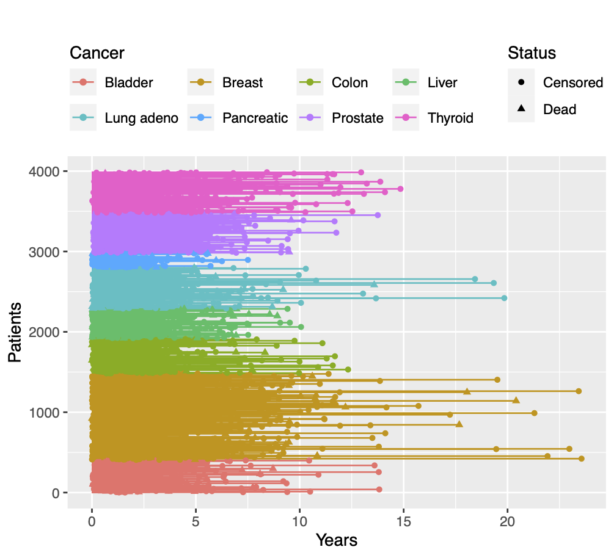
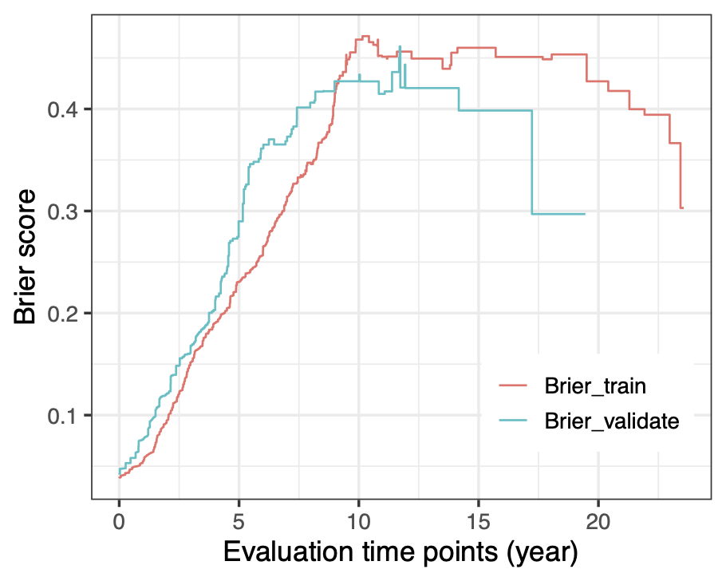

# load all libraries used in this tutorial except mlr3
library("TCGAbiolinks")
library("SummarizedExperiment")
library("DESeq2")
library("dplyr")
library("ggplot2")
library("survival")
library("survminer")
library("M3C")
library("glmnet")
library("plotmo")
library("grpreg")
library("SGL")
library("psbcGroup")
library("psbcSpeedUp")
library("BhGLM")
library("risksetROC")
library("riskRegression")
library("peperr")
library("c060")
library("rms")
library("survAUC")
library("regplot")Supplemental information for ‘Tutorial on survival modeling with applications to omics data’
This is a step-by-step R tutorial using The Cancer Genome Atlas (TCGA) survival and omics data for the article Tutorial on survival modeling with applications to omics data (Z. Zhao et al. 2024).
Introduction
The TCGA database provides an enormous collection of cancer data sets, including survival, clinical and multi-omics data.
We will use TCGA data to demonstrate:
- The different data types
- Preprocessing of survival and omics data
- Analysis of survival data by classical statistical methods
- Unsupervised learning for omics data
- Frequentist & Bayesian supervised learning for survival and omics data
TCGA survival and clinical data
The R/Bioconductor package TCGAbiolinks (Mounir 2019) provides a few functions to download and preprocess clinical and multi-omics data from the Genomic Data Commons (GDC) Data Portal for further analysis.
First we load all necessary libraries used in this tutorial except mlr3 libraries which will be introduced later. Then we use function GDCquery_clinic() from TCGAbiolinks package to query and download TCGA survival and clinical data from multiple cancer types:
# download the clinical data and extract data for multiple cancers using GDC api method
cancer_types <- c(
"TCGA-BLCA", "TCGA-BRCA", "TCGA-COAD", "TCGA-LIHC",
"TCGA-LUAD", "TCGA-PAAD", "TCGA-PRAD", "TCGA-THCA"
)
clin <- NULL
for (i in seq_along(cancer_types)) {
tmp <- TCGAbiolinks::GDCquery_clinic(project = cancer_types[i], type = "clinical")
clin <- rbind(clin, tmp[, c(
"project", "submitter_id", "vital_status",
"days_to_last_follow_up", "days_to_death",
"age_at_diagnosis", "gender", "race",
"ethnicity", "ajcc_pathologic_t"
)])
}
# extract the observed time for each patient and use years as unit
clin$time <- apply(clin[, c("days_to_death", "days_to_last_follow_up")], 1, max, na.rm = TRUE) / 365.25
clin$age <- clin$age_at_diagnosis / 365.25
clin$status <- clin$vital_status
clin <- clin[, c("project", "submitter_id", "status", "time", "gender", "age", "race", "ethnicity")]
# extract patients with positive overall survival time
clin <- clin[(clin$time > 0) & (clin$status %in% c("Alive", "Dead")), ]
# frequency table of the patients w.r.t. status, gender and ethnicity
clin %>%
dplyr::count(status, gender, ethnicity) %>%
group_by(status) %>%
mutate(prop = prop.table(n))# A tibble: 12 × 5
# Groups: status [2]
status gender ethnicity n prop
<chr> <chr> <chr> <int> <dbl>
1 Alive female hispanic or latino 75 0.0240
2 Alive female not hispanic or latino 1367 0.438
3 Alive female not reported 328 0.105
4 Alive male hispanic or latino 34 0.0109
5 Alive male not hispanic or latino 1041 0.334
6 Alive male not reported 276 0.0884
7 Dead female hispanic or latino 7 0.00809
8 Dead female not hispanic or latino 377 0.436
9 Dead female not reported 64 0.0740
10 Dead male hispanic or latino 10 0.0116
11 Dead male not hispanic or latino 327 0.378
12 Dead male not reported 80 0.0925 # censoring plot by cancer types
ID <- 1:nrow(clin)
clin %>%
ggplot(
aes(y = ID, x = time, colour = project, shape = factor(status))
) +
geom_segment(aes(x = time, y = ID, xend = 0, yend = ID)) +
geom_point() +
ggtitle("") +
labs(x = "Years", y = "Patients") +
scale_shape_discrete(name = "Status", labels = c("Censored", "Dead")) +
scale_color_discrete(
name = "Cancer",
labels = c("Bladder", "Breast", "Colon", "Liver", "Lung adeno", "Pancreatic", "Prostate", "Thyroid")
) +
theme(legend.position = "top", legend.direction = "vertical") +
guides(color = guide_legend(nrow = 2, byrow = TRUE))
TCGA omics data
We use function GDCquery() to query and use GDCdownload() and GDCprepare() to download TCGA omics data from one cancer type (breast cancer). The argument data.category in function GDCquery() specifies the type of omics data, such as "Copy Number Variation", "DNA Methylation", "Transcriptome Profiling", "Simple Nucleotide Variation". Note that the downloaded omics data are accompanied by metadata including survival outcomes, clinical and demographic variables. The accompanied metadata are almost the same as the clinical data downloaded via GDCquery_clinic() in the previous section but here only corresponding to one cancer type.
# download TCGA breast cancer (BRCA) mRNA-Seq data using GDC api method
query <- TCGAbiolinks::GDCquery(
project = "TCGA-BRCA",
data.category = "Transcriptome Profiling",
data.type = "Gene Expression Quantification",
workflow.type = "STAR - Counts",
experimental.strategy = "RNA-Seq",
sample.type = c("Primary Tumor")
)
TCGAbiolinks::GDCdownload(query = query, method = "api")
dat <- TCGAbiolinks::GDCprepare(query = query)
SummarizedExperiment::assays(dat)$unstranded[1:5, 1:2] TCGA-A7-A26E-01B-06R-A277-07 TCGA-A2-A0CU-01A-12R-A034-07
ENSG00000000003.15 691 1429
ENSG00000000005.6 20 73
ENSG00000000419.13 335 1674
ENSG00000000457.14 1292 1018
ENSG00000000460.17 536 450It is recommended to use DESeq2 or TMM normalization method for RNA-seq data before further statistical analysis (Y. Zhao et al. 2021). Here we demonstrate how to use the R/Bioconductor package DESeq2 (Love, Huber, and Anders 2014) to normalize the RNA count data.
meta <- colData(dat)[, c("project_id", "submitter_id", "age_at_diagnosis", "ethnicity", "gender", "days_to_death", "days_to_last_follow_up", "vital_status", "paper_BRCA_Subtype_PAM50", "treatments")]
meta$treatments <- unlist(lapply(meta$treatments, function(xx) {
any(xx$treatment_or_therapy == "yes")
}))
dds <- DESeq2::DESeqDataSetFromMatrix(assays(dat)$unstranded, colData = meta, design = ~1)
dds2 <- DESeq2::estimateSizeFactors(dds)
RNA_count <- DESeq2::counts(dds2, normalized = TRUE)
RNA_count[1:5, 1:2] TCGA-A7-A26E-01B-06R-A277-07 TCGA-A2-A0CU-01A-12R-A034-07
ENSG00000000003.15 1899.76848 1419.51789
ENSG00000000005.6 54.98606 72.51561
ENSG00000000419.13 921.01656 1662.89219
ENSG00000000457.14 3552.09968 1011.24507
ENSG00000000460.17 1473.62649 447.01403To perform survival analysis with both clinical/demographic variables and omics data, in the following code we extract female breast cancer patients with their corresponding survival outcomes, clinical/demographic variables and RNA-seq features.
meta$time <- apply(meta[, c("days_to_death", "days_to_last_follow_up")], 1, max, na.rm = TRUE) / 365.25
meta$status <- meta$vital_status
meta$age <- meta$age_at_diagnosis / 365.25
clin <- subset(meta, gender == "female" & !duplicated(submitter_id) & time > 0 & !is.na(age))
clin <- clin[order(clin$submitter_id), ]
RNA_count <- RNA_count[, rownames(clin)]
Note
Bioconductor might provide an outdated version of TCGAbiolinks. Here, we use the GitHub version TCGAbiolinks_2.29.6. If you encounter some issues when using this tutorial, please check your installed TCGAbiolinks version. If necessary, you can re-install the package from its GitHub repository. Otherwise, download the data from
 and load the
and load the datobject with:load("TCGA_data.rda").The package TCGAbiolinks cannot retrieve any proteomics or metabolomics data. It is always useful to look at your data first, in particular the data type and dimensions (i.e. numbers of rows and columns for a data frame or matrix).
Survival analysis with low-dimensional input data
Nonparametric survival analysis
For the data of TCGA breast cancer patients that we extracted in the previous section, Kaplan-Meier estimates of the survival probabilities can be obtained via function survfit() from survival package. The dashed lines in the following figure indicate the median survival time.
# Kaplan-Meier (KM) estimation
clin$status[clin$status == "Dead"] <- 1
clin$status[clin$status == "Alive"] <- 0
clin$status <- as.numeric(clin$status)
sfit <- survival::survfit(Surv(time, status) ~ 1, data = clin)
# calculate survival probability at 1-, 3- and 5-year time points
summary(sfit, times = c(1, 3, 5))
theme_set(theme_bw())
ggsurv <- survminer::ggsurvplot(sfit,
conf.int = TRUE, risk.table = TRUE,
xlab = "Time since diagnosis (year)",
legend = "none", surv.median.line = "hv"
)
ggsurv$plot <- ggsurv$plot + annotate("text", x = 20, y = 0.9, label = "+ Censor")
ggsurv
To compare the survival curves of two groups of patients, for example, treatment (i.e. pharmaceutical or radiation therapy) or nontreatment, the R function survival::survdiff() can perform the log-rank test to compare two survival curves. Alternatively, the R function survival::survfit with a formula including the treatment group as a covariate can return the (KM) survival probabilities for each groups. Then the R function survminer::ggsurvplot() with a survfit object will draw the two survival curves and perform the log-rank test as shown in the following figure.
survival::survdiff(Surv(time, status) ~ treatments, data = clin)
sfit2 <- survfit(Surv(time, status) ~ treatments, data = clin)
ggsurv <- ggsurvplot(sfit2,
conf.int = TRUE, risk.table = TRUE,
xlab = "Time since diagnosis (year)", legend = c(.6, .9),
legend.labs = c("No", "Yes"), legend.title = "Treatment",
risk.table.y.text.col = TRUE, risk.table.y.text = FALSE
)
ggsurv$plot <- ggsurv$plot +
annotate("text", x = 21, y = 1, label = "+ Censor") +
annotate("text", x = 22, y = .88, label = paste0("Log-rank test:\n", surv_pvalue(sfit2)$pval.txt))
ggsurvTo analyze if a continuous variable, e.g. age, is associated with the survival outcomes, we can use the R function coxph() for fitting a Cox model, which is similar to the function lm() for fitting linear models.
fit_cox <- coxph(Surv(time, status) ~ age, data = clin)
summary(fit_cox)Call:
coxph(formula = Surv(time, status) ~ age, data = clin)
n= 1047, number of events= 149
(14 observations deleted due to missingness)
coef exp(coef) se(coef) z Pr(>|z|)
age 0.034244 1.034837 0.006703 5.109 3.24e-07 ***
---
Signif. codes: 0 ‘***’ 0.001 ‘**’ 0.01 ‘*’ 0.05 ‘.’ 0.1 ‘ ’ 1
exp(coef) exp(-coef) lower .95 upper .95
age 1.035 0.9663 1.021 1.049
Concordance= 0.639 (se = 0.029 )
Likelihood ratio test= 26.34 on 1 df, p=3e-07
Wald test = 26.1 on 1 df, p=3e-07
Score (logrank) test = 26.63 on 1 df, p=2e-07The Cox model assumes proportional hazards and log-linearity of the covariates. To check the log-linearity for a clinical or demographic variable, e.g. age, we can fit a penalized smoothing spline for age effect. The following code shows that the nonlinear part of the smoothing spline has a significant effect (\(p = 0.00013\)). Thus, the assumption of log-linearity for age is not satisfied.
fit_cox_spline <- coxph(Surv(time, status) ~ pspline(age), data = clin)
fit_cox_splineCall:
coxph(formula = Surv(time, status) ~ pspline(age), data = clin)
coef se(coef) se2 Chisq DF p
pspline(age), linear 0.03509 0.00577 0.00577 36.98323 1.00 1.2e-09
pspline(age), nonlin 20.69146 3.03 0.00013
Iterations: 5 outer, 15 Newton-Raphson
Theta= 0.828
Degrees of freedom for terms= 4
Likelihood ratio test=46.4 on 4.03 df, p=2e-09
n= 1047, number of events= 149 To check proportional hazards of age, we can add a time-dependent covariate \(age \times g(t)\), where \(g(t)\) is a known function e.g. \(g(t) = \log t\). The following code shows that the time-dependent age is significant using a score test (\(p = 0.0087\)). Thus, the assumption of proportional hazards for age is not satisfied. The above two tests indicate a non-loglinear or time-dependent association of age with the survival outcomes.
survival::cox.zph(fit_cox, transform = "log") chisq df p
age 6.88 1 0.0087
GLOBAL 6.88 1 0.0087Here the approaches for checking log-linearity or proportional hazards can only be used in low-dimensional data settings. When including high-dimensional omics data, there are no standard approaches for checking log-linearity or proportional hazards currently.
Feature preselection/filtering
From a practical point of view, since most omics profiles contain thousands of variables and most supervised statistical methods are not suited for high dimensional omics features, it is better to filter the omics features first. In addition, we perceive that not too many omics features are relevant to one medical problem. We will demonstrate three different filtering approaches for high-dimensional omics data:
- Knowledge-based filtering
- P-value-based filtering
- Variance-based filtering
Knowledge filter
One can be interested in only some biologically meaningful genes or only protein-coding genes in a specific study. For example, the code below filters protein-coding genes.
filtered_rna <- RNA_count[rowData(dat)$gene_type == "protein_coding", ]P-value filter
Before joint analyzing the associations between the thousands of omics features and survival outcomes, one can analyze the association between each omics feature and the survival outcomes, and filter omics features at a statistical significance level \(0.1\) or \(0.2\) (larger than 0.05 to reduce false negative identification of omics features in multivariate analysis). For demonstration, based on the \(100\) mRNA-Seq features from TCGA breast cancer patients preprocessed previously, the code below filters omics features at the statistical significance level \(0.2\), i.e. \(p < 0.2\).
RNA_log2count <- log2(RNA_count[1:100, ] + 1)
pvalues <- rep(NA, nrow(RNA_log2count))
for (j in 1:nrow(RNA_log2count)) {
fit_cox <- coxph(Surv(clin$time, clin$status) ~ RNA_log2count[j, ], data = clin)
pvalues[j] <- summary(fit_cox)$coefficients[, "Pr(>|z|)"]
}
filtered_rna <- RNA_log2count[which(pvalues < 0.2), ]Variance filter
The other common and easy way to decrease the number of omics features is to filter the most variable ones for further analysis. Note that the variance-based filtering step should be done before data standardization (i.e. calculating \(z\)-score), but can be performed after count data normalization and log2-transformation for instance.
The R package M3C (John et al. 2020) provides a filter function featurefilter() by using different variance-type metrics, for example, variance, median absolute deviation (MAD), coefficient of variation (A) and its second order derivative (A2). The simple variance filter can be used if the variance does not change with the corresponding mean, otherwise the coefficient of variation can be used. If the omics data include outliers, MAD filter is more robust than the variance filter. Based on the \(60660\) mRNA-Seq features from TCGA breast cancer patients preprocessed previously, the code below extracts the \(1\%\) most variable features using variance as a filtering metric.
RNA_log2count <- log2(RNA_count + 1)
filtered <- M3C::featurefilter(RNA_log2count, percentile = 1, method = "var", topN = 5)
filtered_rna1 <- filtered$filtered_data***feature filter function***
extracting the most variable: 1 percent
features to start with: 60660
performing calculations for variance
printing topN most variable features with statistics...
feature mean var sd
ENSG00000166509.12 ENSG00000166509.12 6.086125 31.60384 5.621729
ENSG00000110484.7 ENSG00000110484.7 11.005136 26.13755 5.112489
ENSG00000153002.12 ENSG00000153002.12 8.212895 25.89105 5.088325
ENSG00000134184.13 ENSG00000134184.13 5.371435 23.23511 4.820281
ENSG00000160182.3 ENSG00000160182.3 9.902195 21.41407 4.627534
features remaining: 607Another variance-type filter is to remain features with certain percentage of cumulative variances, which will usually filter fewer features than the approaches above. The code below extracts the most variable features explaining \(1\%\) cumulative variances.
cumsum_var <- cumsum(filtered$statistics$var)
cumsum_cutoff <- cumsum_var[length(cumsum_var)] * 0.01
filtered_names <- filtered$statistics$feature[cumsum_var < cumsum_cutoff]Survival analysis with high-dimensional input data
Unsupervised learning (omics data)
In this section we will use the mRNA-Seq data of breast cancer patients from TCGA. The following unsupervised methods can be applied to other omics data as well (the same applies to the supervised learning methods). One important thing is that the input omics data, especially the data type and dimensions, should be suited to the methods.
Unsupervised learning for omics data can be helpful to explore subpopulations of the data, for example, patients from one cancer type can be divided to several omics-related subtypes. We demonstrate three unsupervised learning methods, i.e. principal component analysis (PCA), \(t\)-stochastic neighbour embedding (\(t\)-SNE) and uniform manifold approximation and projection (UMAP), based on the PAM50 genes (Parker et al. 2009). The R package M3C (John et al. 2020) provides the analyses and visualization of all the three methods.
# identify indexes of the PAM50 genes in the TCGA-BRCA data
idx <- which(rowData(dat)$gene_name %in%
c("UBE2T", "BIRC5", "NUF2", "CDC6", "CCNB1", "TYMS", "MYBL2", "CEP55", "MELK", "NDC80", "RRM2", "UBE2C", "CENPF", "PTTG1", "EXO1", "ORC6", "ANLN", "CCNE1", "CDC20", "MKI67", "KIF2C", "ACTR3B", "MYC", "EGFR", "KRT5", "PHGDH", "CDH3", "MIA", "KRT17", "FOXC1", "SFRP1", "KRT14", "ESR1", "SLC39A6", "BAG1", "MAPT", "PGR", "CXXC5", "MLPH", "BCL2", "MDM2", "NAT1", "FOXA1", "BLVRA", "MMP11", "GPR160", "FGFR4", "GRB7", "TMEM45B", "ERBB2"))
# extract the PAM50 genes of TCGA-BRCA patients
TCGA_PAM50 <- RNA_count[idx, ]
# use gene symbols instead of Ensembl IDs
rownames(TCGA_PAM50) <- rowData(dat)$gene_name[idx]
# log2-transformation of the normalized count data
TCGA_PAM50 <- log2(TCGA_PAM50 + 1)
pam50 <- factor(clin$paper_BRCA_Subtype_PAM50)
M3C::pca(TCGA_PAM50, labels = pam50, dotsize = 3, legendtitle = "Subtype")
M3C::tsne(TCGA_PAM50, labels = pam50, dotsize = 3, legendtitle = "Subtype")M3C::umap(TCGA_PAM50, labels = pam50, dotsize = 3, legendtitle = "Subtype")
Supervised learning (omics and survival data)
To investigate the relationship between omics features and survival outcomes, regression methods (i.e. supervised learning) can be applied. Since omics data are high-dimensional, one can use unsupervised learning methods to summarize a few components (dimension reduction) and regress the survival outcomes on the low-dimensional components by some classical statistical methods, e.g. classical Cox model. There are also frequentist and Bayesian supervised learning methods suited to directly regress the survival outcomes on the high-dimensional omics features. Note that preselecting/filtering ultrahigh-dimensional omics features can be useful before running the frequentist and Bayesian supervised learning methods.
Dimension reduction for Cox models
The following code demonstrates the use of the first two principal components of PCA as covariates for the purpose of survival prediction. Similarly, the first components from \(t\)-SNE or UMAP can also be extracted as covariates.
# principal component regression
x_tmp <- prcomp(t(TCGA_PAM50))
# choose the top two components (subjective) as covariates
X_PC <- x_tmp$x[, 1:2]
# build classical survival model (e.g. PH Cox model)
data_tmp <- data.frame(time = clin$time, status = clin$status, X_PC)
fit <- coxph(Surv(time, status) ~ PC1 + PC2, data = data_tmp)
summary(fit)Call:
coxph(formula = Surv(time, status) ~ PC1 + PC2, data = data_tmp)
n= 1047, number of events= 149
coef exp(coef) se(coef) z Pr(>|z|)
PC1 0.004679 1.004690 0.009675 0.484 0.62862
PC2 0.038179 1.038918 0.013233 2.885 0.00391 **
---
Signif. codes: 0 ‘***’ 0.001 ‘**’ 0.01 ‘*’ 0.05 ‘.’ 0.1 ‘ ’ 1
exp(coef) exp(-coef) lower .95 upper .95
PC1 1.005 0.9953 0.9858 1.024
PC2 1.039 0.9625 1.0123 1.066
Concordance= 0.58 (se = 0.028 )
Likelihood ratio test= 8.54 on 2 df, p=0.01
Wald test = 8.64 on 2 df, p=0.01
Score (logrank) test = 8.66 on 2 df, p=0.01Penalized Cox models
For computational efficiency, we will use only the mRNA-Seq features corresponding to the PAM50 genes (Parker et al. 2009) instead of the variance filtered genes from the previous section. We perform an investigation of the relationships between the mRNA-Seq features, two clinical variables (i.e. the patients’ age at diagnosis and their ethnicity) and the survival outcomes.
The R package glmnet (Friedman, Hastie, and Tibshirani 2010) is very computationally efficient to run Lasso and Elastic Net Cox models. Lasso has a tuning parameter \(\lambda\) to control the penalty strength of the coefficients which can be optimized by cross-validation (CV) via function cv.glmnet(). The glmnet() and cv.glmnet() functions provide the argument penalty.factor to allow different shrinkage for different features, which makes sense if one includes both clinical/demographic variables and omics features and does not want to perform feature selection for the clinical/demographic variables.
## Lasso Cox model
## for demonstration simplicity, PAM50 genes are used here
x <- cbind(age = clin$age, ethnicity = factor(clin$ethnicity), t(TCGA_PAM50))
y <- cbind(time = clin$time, status = clin$status)
# set penalty factor without penalizing the two demographical variables
pf <- c(rep(0, 2), rep(1, ncol(x) - 2))
# Lasso Cox by using cv.glmnet to obtain the 5-fold CV optimal lambda.min or lambda.1se
set.seed(123)
cvfit <- glmnet::cv.glmnet(x, y, family = "cox", nfolds = 5, penalty.factor = pf)
mod <- cvfit$glmnet.fit
lambda_optimal <- cvfit$lambda.min # optimal lambda
betas <- as.vector(coef(mod, s = lambda_optimal))
beta.positive <- colnames(x)[betas > 0]
beta.negative <- colnames(x)[betas < 0]
# get ordered list of variables as they appear at smallest lambda
allnames <- names(coef(mod)[, ncol(coef(mod))]
[order(coef(mod)[, ncol(coef(mod))], decreasing = TRUE)])
# assign colors for positive (pink) and negative (green) coefficients
cols <- rep("gray80", length(allnames))
cols[allnames %in% beta.positive] <- "seagreen3"
cols[allnames %in% beta.negative] <- "hotpink"
# draw coefficient paths of a Lasso Cox model
plotmo::plot_glmnet(mod,
label = TRUE, s = lambda_optimal, col = cols,
xlab = expression(log ~ ~lambda), ylab = expression(beta)
)
title("Lasso \n\n")Elastic Net Cox model includes the \(\lambda\) and an additional penalty parameter \(\alpha \in [0,1]\). The parameter \(\alpha\) can be fixed as \(0\) (Ridge), \(1\) (Lasso) or any value between \(0\) and \(1\) for making a compromise between Ridge and Lasso, which can also be optimized by cross-validation manually, see the example below.
## Elastic Net Cox model
# set penalty parameter alpha which comprises between Lasso and ridge regressions
alpha <- seq(0.1, 1, length = 10)
fitEN <- list()
set.seed(123)
for (i in 1:length(alpha)) {
fitEN[[i]] <- cv.glmnet(x, y, family = "cox", alpha = alpha[i], nfolds = 5, penalty.factor = pf)
}
idx <- which.min(sapply(fitEN, function(xx) {
xx$cvm[xx$lambda == xx$lambda.min]
}))
cvfit <- fitEN[[idx]]
# the following code is the same as Lasso previously
mod <- cvfit$glmnet.fit
lambda_optimal <- cvfit$lambda.min # optimal lambda
betas <- as.vector(coef(mod, s = lambda_optimal))
beta.positive <- colnames(x)[betas > 0]
beta.negative <- colnames(x)[betas < 0]
allnames <- names(coef(mod)[, ncol(coef(mod))]
[order(coef(mod)[, ncol(coef(mod))], decreasing = TRUE)])
cols <- rep("gray80", length(allnames))
cols[allnames %in% beta.positive] <- "seagreen3"
cols[allnames %in% beta.negative] <- "hotpink"
plotmo::plot_glmnet(mod,
label = TRUE, s = lambda_optimal, col = cols,
xlab = expression(log ~ ~lambda), ylab = expression(beta)
)
title("Elastic Net \n\n")Adaptive Lasso Cox model needs to pre-estimate all coefficients which will be used as weights via the argument penalty.factor in the glmnet() and cv.glmnet() functions to fit a Lasso Cox model. The pre-estimation can be done by a Ridge Cox model, see an example below.
## Adaptive Lasso Cox model
set.seed(123)
fit <- cv.glmnet(x, y, family = "cox", alpha = 0, nfolds = 5)
weights <- abs(1 / as.vector(coef(fit, s = "lambda.min")))
weights[c(1,2)] = 0 # don't penalize age and ethnicity
# adaptive Lasso Cox by using cv.glmnet to obtain the 5-fold CV optimal lambda.min or lambda.1se
cvfit <- cv.glmnet(x, y, family = "cox", nfolds = 5, penalty.factor = weights)
mod <- cvfit$glmnet.fit
lambda_optimal <- cvfit$lambda.min # optimal lambda
betas <- as.vector(coef(mod, s = lambda_optimal))
beta.positive <- colnames(x)[betas > 0]
beta.negative <- colnames(x)[betas < 0]
# get ordered list of variables as they appear at smallest lambda
allnames <- names(coef(mod)[, ncol(coef(mod))]
[order(coef(mod)[, ncol(coef(mod))], decreasing = TRUE)])
# assign colors
cols <- rep("gray80", length(allnames))
cols[allnames %in% beta.positive] <- "seagreen3"
cols[allnames %in% beta.negative] <- "hotpink"
plot_glmnet(mod,
label = TRUE, s = lambda_optimal, col = cols,
xlab = expression(log ~ lambda), ylab = expression(beta)
)
title("Adative Lasso \n\n")Group Lasso Cox model can be implemented through the R package grpreg (Breheny and Huang 2015). For an illustration, we specify the two demographic variables as the first group, the first \(10\) PAM50 genes as the second group, the last \(40\) PAM50 genes as the third group. A \(k\)-fold cross-validation (CV) for the group Lasso Cox model is performed through function cv.grpsurv(). The returned object cvfit$lambda.min is the value of CV-optimized \(\lambda\). The following results show that
- when choosing the CV-optimized \(\lambda = 0.0143\) (output matrix has lambda values as column names), the estimated coefficients of the first two groups are nonzero (i.e. selecting first and second groups);
- when choosing the \(10\)-th lambda \(\lambda = 0.0217\), only the first group of covariates has nonzero coefficients (i.e. selecting first group);
- when choosing the \(15\)-th lambda \(\lambda = 0.0108\), the estimated coefficients of all the three groups are nonzero (i.e. selecting all groups).
Note that the R package grpreg (Breheny and Huang 2015) also implements group smoothly clipped absolute deviation (SCAD) model and some others, see Breheny, Zeng, and Kurth (2021) for details.
# group Lasso Cox model
group <- c(rep("demographic", 2), rep("PAM50_1", 10), rep("PAM50_2", 40))
group <- factor(group)
set.seed(123)
cvfit <- grpreg::cv.grpsurv(X = x, y = y, group = group, penalty = "grLasso", returnY = TRUE)
round(cvfit$fit$beta[, c(which.min(cvfit$cve), 10, 20)], digits = 4) 0.0143 0.0217 0.0108
age 0.0218 0.0154 0.0247
ethnicity -0.0542 -0.0425 -0.0570
ANLN 0.0193 0.0000 0.0713
FOXC1 -0.0032 0.0000 -0.0104
CDH3 -0.0028 0.0000 -0.0090
UBE2T 0.0154 0.0000 0.0571
NDC80 -0.0239 0.0000 -0.0862
PGR -0.0027 0.0000 -0.0086
BIRC5 -0.0133 0.0000 -0.0497
ORC6 0.0140 0.0000 0.0489
ESR1 -0.0002 0.0000 -0.0008
PHGDH 0.0008 0.0000 0.0024
CDC6 0.0000 0.0000 -0.0094
MMP11 0.0000 0.0000 0.0074
MYBL2 0.0000 0.0000 0.0018
SFRP1 0.0000 0.0000 0.0049
CCNE1 0.0000 0.0000 0.0000
BLVRA 0.0000 0.0000 -0.0436
BAG1 0.0000 0.0000 -0.0163
MLPH 0.0000 0.0000 -0.0155
CDC20 0.0000 0.0000 -0.0129
CENPF 0.0000 0.0000 -0.0245
KRT17 0.0000 0.0000 -0.0125
FOXA1 0.0000 0.0000 0.0040
ACTR3B 0.0000 0.0000 -0.0112
CCNB1 0.0000 0.0000 0.0302
MDM2 0.0000 0.0000 -0.0077
MYC 0.0000 0.0000 0.0002
CEP55 0.0000 0.0000 -0.0242
SLC39A6 0.0000 0.0000 0.0053
ERBB2 0.0000 0.0000 -0.0089
GRB7 0.0000 0.0000 0.0099
KIF2C 0.0000 0.0000 0.0219
NUF2 0.0000 0.0000 0.0210
EGFR 0.0000 0.0000 -0.0150
MKI67 0.0000 0.0000 0.0266
TMEM45B 0.0000 0.0000 0.0100
FGFR4 0.0000 0.0000 0.0023
PTTG1 0.0000 0.0000 0.0095
MELK 0.0000 0.0000 -0.0188
NAT1 0.0000 0.0000 -0.0052
CXXC5 0.0000 0.0000 0.0131
BCL2 0.0000 0.0000 -0.0082
RRM2 0.0000 0.0000 -0.0003
GPR160 0.0000 0.0000 -0.0043
EXO1 0.0000 0.0000 0.0041
UBE2C 0.0000 0.0000 -0.0052
TYMS 0.0000 0.0000 -0.0298
KRT5 0.0000 0.0000 -0.0025
KRT14 0.0000 0.0000 0.0085
MAPT 0.0000 0.0000 -0.0071
MIA 0.0000 0.0000 -0.0180Sparse group Lasso Cox model is implemented in the R package SGL (N. Simon et al. 2019). The function cvSGL() uses cross validation to optimize the penalty parameter \(\lambda\). The following example shows that it induces sparsity in each group of covariates.
# sparse group Lasso Cox model
group <- c(rep("demographic", 2), rep("PAM50_1", 10), rep("PAM50_2", 40))
group <- factor(group)
dat_tmp <- list(x = x, time = clin$time, status = clin$status)
set.seed(123)
cvfit <- SGL::cvSGL(dat_tmp, index = group, type = "cox", nfold = 5)
beta.hat <- cvfit$fit$beta[, which.min(cvfit$lldiff)]
names(beta.hat) <- paste0("group", as.numeric(group), ".", c(1:2, 1:10, 1:40))
beta.hat group1.1 group1.2 group2.1 group2.2 group2.3 group2.4
5.6584838488 0.0000000000 0.4812006103 0.0000000000 0.0000000000 0.2481830177
group2.5 group2.6 group2.7 group2.8 group2.9 group2.10
0.0000000000 -0.0003042126 0.0000000000 0.3317385412 0.0000000000 0.0000000000
group3.1 group3.2 group3.3 group3.4 group3.5 group3.6
0.0000000000 0.3037631224 0.0000000000 -0.3782338997 0.0000000000 -2.6805881347
group3.7 group3.8 group3.9 group3.10 group3.11 group3.12
-1.8418523757 0.0000000000 0.0000000000 0.0000000000 -1.7849923007 0.0000000000
group3.13 group3.14 group3.15 group3.16 group3.17 group3.18
0.0000000000 1.0290918041 0.0000000000 0.0000000000 0.0000000000 0.0000000000
group3.19 group3.20 group3.21 group3.22 group3.23 group3.24
0.0000000000 0.0000000000 0.0000000000 0.0000000000 -0.3679980817 0.0000000000
group3.25 group3.26 group3.27 group3.28 group3.29 group3.30
0.9925901529 0.0088469957 0.0000000000 0.0000000000 0.0000000000 0.0000000000
group3.31 group3.32 group3.33 group3.34 group3.35 group3.36
-2.1975942364 0.0000000000 0.0000000000 0.0000000000 0.0000000000 -0.8407228093
group3.37 group3.38 group3.39 group3.40
-1.8217490477 0.0000000000 -0.7323739107 -2.0111900380 Sparse Bayesian Cox models
The R package psbcGroup (Lee, Chakraborty, and Sun 2021) integrates a large set of sparse Bayesian Cox models. The function psbcGL() implements Bayesian Cox models with Lasso and group Lasso priors for feature selection and group selection respectively. For the Lasso prior, set the hyperparameter priorPara$groupInd = 1:p where \(p\) is the total number of covariates. For the group Lasso prior, set the hyperparameter priorPara$groupInd as a vector of size \(p\), where each element denotes which group each covariate corresponds to.
# Bayesian Cox model with Lasso prior
set.seed(123)
survObj <- list(t = clin$time, di = clin$status, x = x)
p <- ncol(x)
# set hyperparameters.
# For Lasso prior (i.e. 'groupInd'= 1:p), larger ratio r/delta tends to force the posterior betas to be more concentrated at 0
# For group Lasso prior (i.e. 'groupInd' as group indicator for covariates), larger ratio r/delta tends to force stronger grouping effect of covariates
s <- c(sort(survObj$t[survObj$di == 1]), 2 * max(survObj$t) - max(survObj$t[-which(survObj$t == max(survObj$t))]))
priorPara <- list(
"eta0" = 1, "kappa0" = 1, "c0" = 2, "r" = 0.5,
"delta" = 0.0001, "s" = s, "J" = length(s), "groupInd" = 1:p
)
# set MCMC parameters
mcmcPara <- list("numBeta" = p, "beta.prop.var" = 1)
# set initial values of hyperparameters
lambdaSq <- 1
initial <- list(
"beta.ini" = rep(0, p), "lambdaSq" = 1, "sigmaSq" = runif(1, 0.1, 10),
"tauSq" = rexp(length(unique(priorPara$groupInd)), "rate" = lambdaSq / 2),
"h" = rgamma(priorPara$J, 1, 1)
)
# in real applications, 'num.reps' should be large enough (e.g. 20000, 40000) and 'chain' to be > 1
# argument 'rw' should be FALSE for high-dimensional covariates
BayesLassofit <- psbcGroup::psbcGL(survObj, priorPara, initial, rw = TRUE, mcmcPara, num.reps = 100, thin = 1, chain = 1)
# burn-in the first half MCMC iterations
beta_p <- BayesLassofit$beta.p[-(1:51), ]
colnames(beta_p) <- colnames(x)
psbcSpeedUp:::plot.psbcSpeedUp(beta_p)Note that psbcGroup cannot distinguish mandatory (unpenalized) covariates with omics features, see Zucknick, Saadati, and Benner (2015) for an extended Bayesian Lasso Cox model. The following code implements the Bayesian Lasso Cox model with mandatory covariates through the R package psbcSpeedUp (Z. Zhao et al. 2023).
# Bayesian Cox model with Lasso prior and mandatory covariates
set.seed(123)
survObjM <- list(t = clin$time, di = clin$status, x = x[, c(3:52, 1:2)])
priorPara <- list("eta0" = 1, "kappa0" = 1, "c0" = 2, "r" = 0.5, "delta" = 0.0001)
BayesLassoMfit <- psbcSpeedUp::psbcSpeedUp(survObjM,
p = 50, q = 2, hyperpar = priorPara,
nIter = 100, burnin = 50, thin = 1, rw = FALSE, outFilePath = "tmp"
)
plot(BayesLassoMfit)Running MCMC iterations ...
[##################################################] 100%
DONE, exiting! In the R package psbcGroup (Lee, Chakraborty, and Sun 2021), function psbcEN() implements Bayesian Cox models with Elastic Net prior for feature selection with grouping effect of correlated features. Function psbcFL() implements Bayesian Cox models with fused Lasso prior.
# Bayesian Cox model with Elastic Net prior
set.seed(123)
# set hyperparameters
# Larger ratio r1/delta1 forces the posterior betas to be more concentrated at 0
# Larger ratio r2/delta2 forces stronger grouping effect of covariates
priorPara <- list(
"eta0" = 1, "kappa0" = 1, "c0" = 2, "r1" = 0.1, "r2" = 1,
"delta1" = 0.1, "delta2" = 1, "s" = s, "J" = length(s)
)
# set MCMC parameters
mcmcPara <- list("numBeta" = p, "beta.prop.var" = 1)
# set initial values of hyperparameters
initial <- list(
"beta.ini" = rep(0, p), "lambda1Sq" = 1, "lambda2" = 1, "sigmaSq" = runif(1, 0.1, 10),
"tauSq" = rexp(p, rate = 1 / 2), "h" = rgamma(priorPara$J, 1, 1)
)
# in real application, 'num.reps' should be large enough (e.g. 20000, 40000) and 'chain' to be > 1
BayesENfit <- psbcEN(survObj, priorPara, initial, rw = FALSE, mcmcPara,
num.reps = 100, thin = 1, chain = 1)
# burn-in the first half MCMC iterations
EN_beta_p <- BayesENfit$beta.p[52:101, ]
colnames(EN_beta_p) <- colnames(x)
psbcSpeedUp:::plot.psbcSpeedUp(EN_beta_p)A penalized semiparametric Bayesian Cox model with double exponential spike-and-slab prior is implemented in the R package BhGLM (Yi et al. 2019). Note that BhGLM provides frequentist confidence intervals of the posterior mode of the coefficients.
# penalized semiparametric Bayesian Cox model with (double exponential) spike-and-slab prior
y_surv <- Surv(clin$time, clin$status)
x_dataframe <- as.data.frame(x)
set.seed(123)
Bayesfit <- BhGLM::bcoxph(y_surv ~ ., x_dataframe, prior = mde(0, 0.01, 0.8), control = coxph.control(iter.max = 200))
BhGLM::plot.bh(Bayesfit, col.pts = c("red", "blue"), main = "Cox with mixture double exponential\n")Survival model validation
The ideal evaluation of a prognostic model is based on completely independent validation data, since high-dimensional survival models built on the training data can be overfitted. If there are no independent validation data, it is recommended to use resampling-based methods for estimating the uncertainty of the model’s prediction performance. This can be done for example by repeatedly splitting the dataset to training/validation sets and evaluating a model’s performance on the different validation sets using various evaluation metrics.
Model validation
To validate a prediction model systematically, the predictive performance of the model is commonly addressed by
- Discrimination: the ability of the model to distinguish between low and high risk patients
- Calibration: the agreement between the observed and predicted survival probabilities
- Overall performance: the distance between the observed and predicted survival probabilities
The performance metrics can be time-dependent or time-independent, with the time-dependent metrics being more informative in general compared to integrated measures (i.e. evaluated across many time points). For survival data, we can assess the discriminatory power of a model (i.e. how well does it ranks patients) or how well a model is calibrated (i.e. how closely the predicted survival probabilities agree numerically with the actual survival outcomes). For example, measures such as the receiver operating characteristic (ROC) curve, the (integrated) area under time-specific ROC curves (AUC, Heagerty and Zheng (2005)) and the concordance index (C-index, Harrell et al. (1982)) are measures of discrimination, while the right-censored logarithmic loss (RCLL, Avati et al. (2020)) and the well-known Brier score (Graf et al. 1999) are used to evaluate both discrimination and calibration performance.
Model evaluation (classic)
Note
‘Classic’ here refers to the use of manual R code in combination with many separate R packages which have been routinely used in academia the latest 10+ years for evaluating survival models.
To evaluate the performance of a statistical model, we first split the data into training and validation data sets. For example, we can randomly split the 1047 BRCA patients from TCGA into \(80\%\) as training set and \(20\%\) as validation set.
set.seed(123)
n <- nrow(x)
idx <- sample(1:n, n * 0.8, replace = FALSE)
x_train <- x[idx, ]
y_train <- y[idx, ]
x_validate <- x[-idx, ]
y_validate <- y[-idx, ]
Important
The \(20\%\) split of a dataset is often not considered an independent dataset and resampling-based methods should be used in such cases to provide an unbiased estimate of the predictive accuracy of a prognostic model.
Discrimination metrics
Goodness-of-fit
The simplest way to demonstrate the prognostic power of a survival model is to dichotomize the prognostic scores (i.e., linear predictor \(lp\) in the Cox model) by median value, and then to use a log-rank test to compare the survival curves of the patients in the two groups. We use the built model to predict the prognostic scores based on the \(20\%\) validation data. The following code shows the goodness-of-fit of a Lasso Cox model with the BRCA patients survival and PAM50 mRNA-Seq data from TCGA.
# train a Lasso Cox model, similarly for other Cox-type models
set.seed(123)
cvfit <- cv.glmnet(x_train, y_train, family = "cox", nfolds = 5, penalty.factor = pf)
pred_lp <- predict(cvfit, newx = x_validate, s = cvfit$lambda.min, type = "link")
# dichotomize by prognostic scores (linear predictor) by median to divide the validation patients into two groups
group_dichotomize <- as.numeric(pred_lp > median(pred_lp))
# draw two survival curves based on KM estimation and compare them by a log-rank test
dat_tmp <- data.frame(time = y_validate[, 1], status = y_validate[, 2], group = group_dichotomize)
sfit <- survfit(Surv(time, status) ~ group, data = dat_tmp)
ggsurv <- ggsurvplot(sfit,
conf.int = TRUE, risk.table = TRUE,
xlab = "Time since diagnosis (year)", legend = c(.2, .3),
legend.labs = c("Low risk", "High risk"), legend.title = "Dichotomized groups",
risk.table.y.text.col = TRUE, risk.table.y.text = FALSE
)
ggsurv$plot <- ggsurv$plot +
annotate("text", x = 2.6, y = .03, label = paste0("Log-rank test:\n", surv_pvalue(sfit)$pval.txt))
ggsurv$table <- ggsurv$table + labs(y = "Dichotomized\n groups")
ggsurvThe prognostic scores can also be divided into three or more groups based on quantiles and the log-rank test can be used to compare the difference of multiple survival curves.
group <- pred_lp
group[pred_lp >= quantile(pred_lp, 2 / 3)] <- 3
group[pred_lp >= quantile(pred_lp, 1 / 3) & pred_lp < quantile(pred_lp, 2 / 3)] <- 2
group[pred_lp < quantile(pred_lp, 1 / 3)] <- 1
# draw two survival curves based on KM estimation and compare them by a log-rank test
dat_tmp <- data.frame(time = y_validate[, 1], status = y_validate[, 2], group = group)
sfit <- survfit(Surv(time, status) ~ group, data = dat_tmp)
ggsurv <- ggsurvplot(sfit,
conf.int = TRUE, risk.table = TRUE,
xlab = "Time since diagnosis (year)", legend = c(.2, .3),
legend.labs = c("Low risk", "Middle risk", "High risk"), legend.title = "Groups",
risk.table.y.text.col = TRUE, risk.table.y.text = FALSE
)
ggsurv$plot <- ggsurv$plot +
annotate("text", x = 3.5, y = .05, label = paste0("Log-rank test:\n", surv_pvalue(sfit)$pval.txt))
ggsurvROC curve
The R package risksetROC (Heagerty and Zheng 2005) can estimate a ROC curve at an evaluation time point. The following code draws a ROC curve at 5-years survival evaluation time point for the 20% TCGA validation data and based on a Lasso Cox model learned from the 80% training data.
ROC <- risksetROC(
Stime = y_validate[, 1], status = y_validate[, 2],
marker = pred_lp, predict.time = 5, method = "Cox",
main = "ROC Curve", col = "seagreen3", type = "s",
lwd = 2, xlab = "1 - Specificity", ylab = "Sensitivity"
)
text(0.7, 0.2, paste("AUC =", round(ROC$AUC, 3)))Time-dependent AUC
Both time-dependent and integrated AUCs can be estimated by the R package risksetROC. We demonstrate the calculation based on both training and validation data.
Survival prediction in Cox models
A Cox proportional hazards model (and Lasso Cox as a consequence) is a semi-parametric model, which means that it does not produce survival distribution predictions by default. However, using the function risksetROC::CoxWeights() you can transform the cv.glmnet’s output linear predictors (lp) to survival distribution predictions. This transformation internally uses the Breslow estimator for the cumulative baseline hazard.
# unique event times for patients in the training and validation data sets
utimes_train <- sort(unique(y_train[y_train[, 2] == 1, 1]))
utimes_validate <- sort(unique(y_validate[y_validate[, 2] == 1, 1]))
# markers from the estimated linear predictors of a Lasso Cox model
pred_lp_train <- predict(cvfit, newx = x_train, s = cvfit$lambda.min, type = "link")
pred_lp_validate <- predict(cvfit, newx = x_validate, s = cvfit$lambda.min, type = "link")
## compute time-dependent AUC
AUC_train <- rep(NA, length(utimes_train))
AUC_validate <- rep(NA, length(utimes_validate))
for (j in 1:length(utimes_train)) {
out <- risksetROC::CoxWeights(
marker = pred_lp_train, Stime = y_train[, 1],
status = y_train[, 2], predict.time = utimes_train[j]
)
AUC_train[j] <- out$AUC
}
for (j in 1:length(utimes_validate)) {
out <- risksetROC::CoxWeights(
marker = pred_lp_validate, Stime = y_validate[, 1],
status = y_validate[, 2], predict.time = utimes_validate[j]
)
AUC_validate[j] <- out$AUC
}
# draw the time-dependent AUC from the training and validation data sets
dat_AUC <- data.frame(
tAUC = c(AUC_train, AUC_validate),
times = c(utimes_train, utimes_validate),
group = c(rep("AUC_train", length(AUC_train)), rep("AUC_validate", length(AUC_validate)))
)
ggplot(dat_AUC, aes(times, tAUC, group = group, color = group)) +
xlab("Evaluation time points (year)") +
ylab("AUC") +
ylim(0.5, 1) +
geom_step(direction = "vh") +
theme(legend.position = c(0.7, 0.8), legend.title = element_blank())Integrated AUC
The R package risksetROC (Heagerty and Zheng 2005) provides function IntegrateAUC() to estimate integrated AUC.
# Before computing integrated AUC, first estimate survival probabilities at unique survival times
surv_prob_train <- unique(survfit(Surv(y_train[, 1], y_train[, 2]) ~ 1)$surv)
surv_prob_validate <- unique(survfit(Surv(y_validate[, 1], y_validate[, 2]) ~ 1)$surv)
## integrated AUC (e.g. over tmax=10 years) to get concordance measure based on training data
(iAUC_train <- risksetROC::IntegrateAUC(AUC_train, utimes_train, surv_prob_train, tmax = 10))[1] 0.6279646## integrated AUC (e.g. over tmax=10 years) to get concordance measure based on validation data
(iAUC_validate <- risksetROC::IntegrateAUC(AUC_validate, utimes_validate, surv_prob_validate, tmax = 10))[1] 0.6318253Time-dependent C-index
The C-index is not proper for \(t\)-year predictions, see Blanche, Kattan, and Gerds (2019). Consider using time-dependent AUC or time-dependent Brier score instead. For a time-dependent discrimination index for survival data, see Antolini et al. (2005).
C-index
The R package glmnet provides the function glmnet::Cindex() to estimate Harrell’s C-index from a “coxnet” object. The R package survAUC provides the function survAUC::UnoC() to estimated Uno’s C-index. See an example calculation for both C-indexes using a Lasso Cox model below.
set.seed(123)
cvfit <- cv.glmnet(x_train, y_train, family = "cox", nfolds = 5, penalty.factor = pf)
pred <- predict(cvfit, newx = x_validate, type = "link", s = cvfit$lambda.min)
# Harrell's C-index
(Cindex_Harrell <- Cindex(pred = pred[, 1], y = y_validate))[1] 0.7246466# Uno's C-index
(Cindex_Uno <- survAUC::UnoC(y_train, y_validate, pred))[1] 0.5772041Calibration metrics
See a calibration plot in the following section Graphical computation.
Overall metrics
Time-dependent Brier score
The R package riskRegression can assess the prediction error curves of survival models based on the time-dependent Brier score. Similar to the time-dependent AUC, one needs to first calculate the linear predictors (\(lp\)) from a frequentist or Bayesian Cox model, and then use survival::coxph() to regress the survival outcomes on the linear predictor, which is prepared as input of riskRegression::Score() to estimate the (time-dependent) Brier score. If the survival model was fitted via the R package psbcSpeedUp, the curve of the time-dependent Brier score can be drawn by using the function psbcSpeedUp::plotBrier().
## time-dependent Brier score
# use the (x_train, y_train) 80% samples for training
# and the (x_validate, y_validate) 20% samples for testing
y_train_surv <- Surv(y_train[, "time"], y_train[, "status"])
y_validate_surv <- Surv(y_validate[, "time"], y_validate[, "status"])
set.seed(123)
cvfit <- cv.glmnet(x_train, y_train_surv, family = "cox", nfolds = 5, penalty.factor = pf)
lp_train <- predict(cvfit, newx = x_train, s = cvfit$lambda.min, type = "link")
lp_validate <- predict(cvfit, newx = x_validate, s = cvfit$lambda.min, type = "link")
# prepare data format suited for function Score() from the riskRegression package
data_train <- data.frame(time = y_train[, "time"], status = y_train[, "status"], lp = as.vector(lp_train))
data_validate <- data.frame(time = y_validate[, "time"], status = y_validate[, "status"], lp = as.vector(lp_validate))
lasso_train <- coxph(Surv(time, status) ~ lp, data = data_train, y = TRUE, x = TRUE)
lasso_validate <- coxph(Surv(time, status) ~ lp, data = data_validate, y = TRUE, x = TRUE)
# calculate Brier scores based on both training and validation data
Brier_train <- riskRegression::Score(list("Brier_train" = lasso_train), formula = Surv(time, status) ~ 1, data = data_train, conf.int = FALSE, metrics = "brier", summary = "ibs", times = sort(unique(data_train$time)))$Brier$score
Brier_validate <- riskRegression::Score(list("Brier_validate" = lasso_validate), formula = Surv(time, status) ~ 1, data = data_validate, conf.int = FALSE, metrics = "brier", summary = "ibs", times = sort(unique(data_validate$time)))$Brier$score
Brier_score <- rbind(Brier_train, Brier_validate)
Brier_score <- Brier_score[Brier_score$model != "Null model", ]
ggplot(Brier_score, aes(times, Brier, group = model, color = model)) +
xlab("Evaluation time points (year)") +
ylab("Brier score") +
geom_step(direction = "vh") +
theme(legend.position = c(0.15, 0.88), legend.title = element_blank())
Integrated Brier score (IBS)
The function riskRegression::Score() also summarizes IBS when specifying argument summary = "ibs". We can extract the IBS corresponding to the largest evaluation time point.
Brier_validate_ibs <- Brier_validate[Brier_validate$model == "Brier_validate", ]
Brier_validate_ibs$IBS[which.max(Brier_validate_ibs$times)][1] 0.1721158Uncertainty Quantification
Important
It is recommended to use resampling-based methods for estimating the uncertainty of the model’s performance, if there are no independent validation data for model evaluation. This can be done for example by repeatedly splitting the dataset to training/validation sets and evaluating a model’s performance on the different validation sets using various discrimination or calibration metrics.
We demonstrate how to randomly split the data, e.g. \(100\) times, train a Lasso Cox model and estimate the integrated AUC based on the validation data in each replication. For other Cox-type models, we can just replace the model fitting part cv.glmnet() (and predict()) in the for loop below. However, most of the Bayesian Cox models introduced previously are computationally time-consuming when randomly splitting the data many times.
# split the data 100 times
set.seed(123)
k <- 100
iAUC <- rep(NA, k)
for (i in 1:k) {
idx <- sample(1:n, n * 0.8, replace = FALSE)
x_train <- x[idx, ]
y_train <- y[idx, ]
x_validate <- x[-idx, ]
y_validate <- y[-idx, ]
cvfit <- cv.glmnet(x_train, y_train, family = "cox", nfolds = 5, penalty.factor = pf)
pred_lp <- predict(cvfit, newx = x_validate, s = cvfit$lambda.min, type = "link")
utimes <- sort(unique(y_validate[y_validate[, 2] == 1, 1]))
AUC <- rep(NA, length(utimes))
for (j in 1:length(utimes)) {
out <- CoxWeights(marker = pred_lp, Stime = y_validate[, 1], status = y_validate[, 2], predict.time = utimes[j])
AUC[j] <- out$AUC
}
surv_prob <- unique(survfit(Surv(y_validate[, 1], y_validate[, 2]) ~ 1)$surv)
iAUC[i] <- IntegrateAUC(AUC, utimes, surv_prob, tmax = 10)
}
dat_tmp <- data.frame(x = "Lasso Cox", y = iAUC)
set.seed(123)
ggplot(dat_tmp, aes(x, y)) +
geom_boxplot() +
ylim(0.5, 1) +
xlab("") +
ylab("Integrated AUC") +
geom_jitter(color = "blue", size = 0.5, alpha = 0.5)Similar to obtaining uncertainty of the integrated AUC, we can also estimate the uncertainty of the C-index for evaluating the global performance of our model’s discrimination.
# split the data 100 times
set.seed(123)
k <- 100
Cindex_all <- data.frame(Harrell = rep(NA, k), Uno = rep(NA, k))
for (i in 1:k) {
idx <- sample(1:n, n * 0.8, replace = FALSE)
x_train <- x[idx, ]
y_train <- y[idx, ]
x_validate <- x[-idx, ]
y_validate <- y[-idx, ]
cvfit <- cv.glmnet(x_train, y_train, family = "cox", nfolds = 5, penalty.factor = pf)
pred <- predict(cvfit, newx = x_validate, type = "response", s = cvfit$lambda.min)
Cindex_all$Harrell[i] <- mean(apply(pred, 2, Cindex, y = y_validate))
Cindex_all$Uno[i] <- UnoC(y_train, y_validate, pred)
}
dat_tmp <- data.frame(x = rep(c("Harrell", "Uno"), each = k), y = unlist(Cindex_all))
set.seed(123)
ggplot(dat_tmp, aes(x, y, col = x)) +
geom_boxplot() +
geom_jitter(size = 0.5, alpha = 0.5) +
ylim(0, 1) +
xlab("") +
ylab("C-index") +
theme(legend.position = "none")
The R package c060 (Sill et al. 2014) includes wrapper functions for the glmnet algorithm and implements resampling-based methods (e.g. cross-validation and bootstrap - with and without replacement) based on the peperr package to calculate the time-dependent Brier score. c060 extends peperr package to allow mandatory features without penalization. Binder and Schumacher (2008) recommends to draw bootstrap samples without replacement (i.e. subsampling), because bootstrap samples with replacement often result in too complex models in high-dimensional settings. To use resampling by CV properly for survival data, see R. M. Simon et al. (2011). Note that resampling-based methods here are similar to splitting \(80\%/20\%\) the data many times which allows us to quantify the uncertainty of the time-dependent Brier score.
## time-dependent Brier score by subsampling from the whole data
set.seed(123)
peperr_object <- peperr::peperr(
response = y_surv, x = x, fit.fun = fit.glmnet,
args.fit = list(family = "cox", penalty.factor = pf),
complexity = complexity.glmnet,
args.complexity = list(family = "cox", nfolds = 5, penalty.factor = pf),
indices = resample.indices(n = n, method = "sub632", sample.n = 100)
)
c060::Plot.peperr.curves(peperr_object)Feature stability analysis
To identify stable omics features, a straightforward way is to find the overlapped omics features with nonzero coefficients among different data subsets (e.g. CV folds or resamples). The following code summarizes the Lasso Cox selected omics features which were identified at least \(2\) or \(5\) out of \(10\) resamples. Similarly, this approach can be applied to other Lasso-type or Bayesian Cox models that perform feature selection for identifying stable selected features.
# specify the number of resamples k
k <- 10
beta_all <- matrix(nrow = ncol(x), ncol = k)
set.seed(123)
for (j in 1:k) {
resample_id <- sample(1:nrow(y), nrow(y), replace = TRUE)
resample_x <- x[resample_id, ]
resample_y <- y[resample_id, ]
cvfit <- cv.glmnet(resample_x, resample_y, family = "cox", nfolds = 5, penalty.factor = pf)
beta_all[, j] <- as.vector(coef(cvfit, s = cvfit$lambda.min))
}
(stable_features <- colnames(x)[rowSums(beta_all != 0) >= 2]) [1] "age" "ethnicity" "ANLN" "UBE2T" "NDC80" "PGR" "ORC6"
[8] "ESR1" "PHGDH" "MMP11" "SFRP1" "CCNE1" "BLVRA" "BAG1"
[15] "MLPH" "CENPF" "KRT17" "FOXA1" "ACTR3B" "CCNB1" "MDM2"
[22] "MYC" "CEP55" "SLC39A6" "GRB7" "NUF2" "EGFR" "MKI67"
[29] "TMEM45B" "FGFR4" "MELK" "NAT1" "CXXC5" "BCL2" "GPR160"
[36] "TYMS" "KRT5" "MAPT" "MIA"(stable_features <- colnames(x)[rowSums(beta_all != 0) >= 5]) [1] "age" "ethnicity" "ANLN" "ORC6" "MMP11" "BLVRA" "BAG1"
[8] "CCNB1" "EGFR" "TMEM45B" "BCL2" "TYMS" "KRT5" "MIA"Alternatively for a Bayesian Cox model, its median probability model (MPM) can be obtained based on the coefficient estimates over MCMC iterations. The following code shows how to obtain the MPM’s coefficients of the penalized semiparametric Bayesian Cox model with Elastic Net prior run previously.
gammas <- colMeans(matrix(as.numeric(EN_beta_p != 0), ncol = ncol(EN_beta_p)))
beta_MPM <- (gammas >= 0.5) * colMeans(EN_beta_p) / gammas
beta_MPM[is.na(beta_MPM)] <- 0
beta_MPM age ethnicity ANLN FOXC1 CDH3 UBE2T
1.305162e-02 5.348458e-03 -1.299443e-03 -1.857811e-02 -6.123574e-03 -5.467111e-03
NDC80 PGR BIRC5 ORC6 ESR1 PHGDH
-6.652927e-03 -2.101243e-06 -1.640386e-02 -1.237153e-02 -1.077863e-02 2.483990e-02
CDC6 MMP11 MYBL2 SFRP1 CCNE1 BLVRA
-9.079708e-03 -1.588726e-02 5.225344e-03 -1.383981e-02 -3.181265e-03 -2.632373e-02
BAG1 MLPH CDC20 CENPF KRT17 FOXA1
-3.913529e-02 -1.435805e-02 -2.027232e-02 -2.476495e-02 -2.871143e-02 -3.017213e-03
ACTR3B CCNB1 MDM2 MYC CEP55 SLC39A6
-2.504869e-03 -1.346817e-03 -2.156041e-02 1.431062e-02 1.421036e-02 -1.150196e-02
ERBB2 GRB7 KIF2C NUF2 EGFR MKI67
-6.347367e-03 -1.008689e-02 6.033792e-03 -2.405689e-03 -1.964927e-02 1.956661e-02
TMEM45B FGFR4 PTTG1 MELK NAT1 CXXC5
2.736216e-02 1.842323e-03 -5.651905e-03 2.894074e-02 -2.126163e-02 2.571472e-02
BCL2 RRM2 GPR160 EXO1 UBE2C TYMS
-5.140894e-03 2.881004e-02 -3.927705e-02 -1.710419e-02 -1.343832e-02 -1.884342e-02
KRT5 KRT14 MAPT MIA
-2.180294e-02 -1.386489e-03 -2.587557e-02 -1.033317e-02Graphical representation
After identifying stable omics features predictive of survival outcomes, we can draw a nomogram to allows the graphical calculation of survival probabilities and report a calibration plot for practitioners.
Nomogram
We demonstrate a nomogram using the stable selected features from TCGA breast cancer data preprocessed previously. The R package regplot draws an enhanced regression nomogram based on the rms package.
# remove patients without reporting ethnicity
yy <- y[x[, 2] != 3, ]
xx <- x[x[, 2] != 3, ]
# specify the number of resamples k
k <- 10
beta_all <- matrix(nrow = ncol(xx), ncol = k)
set.seed(123)
for (j in 1:k) {
resample_id <- sample(1:nrow(yy), nrow(yy), replace = TRUE)
resample_x <- xx[resample_id, ]
resample_y <- yy[resample_id, ]
cvfit <- cv.glmnet(resample_x, resample_y, family = "cox", nfolds = 5, penalty.factor = pf)
beta_all[, j] <- as.vector(coef(cvfit, s = cvfit$lambda.min))
}
# identify features at least 80% frequently selected
x_stable <- data.frame(xx[, rowSums(beta_all != 0) >= k * 0.8])
x_stable$ethnicity <- factor(x_stable$ethnicity)
levels(x_stable$ethnicity) <- c("Hispanic/latino", "Not hispanic/latino")
data_tmp <- data.frame(times = yy[, "time"], status = yy[, "status"], x_stable)
f <- cph(
formula = Surv(times, status) ~ age + ethnicity + ANLN + BLVRA + EGFR,
data = data_tmp, x = TRUE, y = TRUE, surv = TRUE
)
ddist <- datadist(data_tmp)
oldoption <- options(datadist = "ddist")
surv <- Survival(f)
nom <- nomogram(f,
fun = list(function(x) surv(1, x), function(x) surv(3, x), function(x) surv(5, x)),
funlabel = c(
"1-Year Survival Probability",
"3-Year Survival Probability",
"5-Year Survival Probability"
),
lp = FALSE
)
regplot::regplot(f,
observation = data_tmp[1, ], failtime = c(1, 3, 5), title = "",
prfail = FALSE, points = TRUE, showP = FALSE, subticks = TRUE
)Calibration plot
A calibration plot is a straightforward visualization to show the prediction ability of the nomogram, i.e., the agreement between predicted survival probabilities from the final model and the KM estimated survival probabilities in different percentiles of the predicted values at a time point of interest. We demonstrate below calibration plots based on training and validation data sets, respectively.
# Calibration at 5-year time-point
# prepare suitable data format for calibration plot
set.seed(123)
train_id <- sample(1:nrow(yy), nrow(yy) * 0.8, replace = FALSE)
data_train <- data_tmp[train_id, ]
data_validate <- data_tmp[-train_id, ]
ddist <- datadist(data_train)
options(datadist = "ddist")
f_train <- cph(
formula = Surv(times, status) ~ age + ethnicity + ANLN + BLVRA + EGFR,
data = data_train, x = TRUE, y = TRUE, surv = TRUE, time.inc = 5
)
f_validate <- update(f_train, data = data_validate)
cal_train <- calibrate(f_train, u = 5, cmethod = "KM", m = nrow(data_train) / 4, B = 200)
cal_validate <- calibrate(f_validate, u = 5, cmethod = "KM", m = nrow(data_validate) / 4, B = 200)
layout(matrix(1:2, nrow = 1))
plot(cal_train,
lwd = 2, lty = 1, errbar.col = "seagreen3",
xlab = "Predicted survival probability", ylab = "Actual survival probability",
xlim = c(0, 1), ylim = c(0, 1), col = "seagreen3", subtitles = FALSE
)
title(main = "Calibration on training data")
plot(cal_validate,
lwd = 2, lty = 1, errbar.col = "seagreen3",
xlab = "Predicted survival probability", ylab = "Actual survival probability",
xlim = c(0, 1), ylim = c(0, 1), col = "seagreen3", subtitles = FALSE
)
title(main = "Calibration on validation data")Model evaluation (mlr3)
- Create a survival task from a dataset and split it to training and test (validation) sets
- Define a Lasso Cox model that can output both linear predictors and survival distribution predictions and train/tune it on the training set
- Make predictions using the trained Lasso Cox model on the separate test set
- Measure the performance of our model (discrimination and calibration) using several evaluation metrics
- Using resampling techniques, we will assess our model’s capacity for generalization (prediction on unseen data) and the stability of the model’s selected features
For the rest of the analysis, we will borrow the terminology from the mlr3 ecosystem of machine learning packages (e.g. task is a dataset, learner is a model, etc.). See mlr3 book for more details.
First, we load the necessary mlr3 libraries (Lang et al. 2019; Sonabend et al. 2021) and some other useful ones:
library("mlr3verse") # mlr3, mlr3pipeplines, mlr3learners, mlr3tuning, paradox, etc.
library("mlr3proba") # probabilistic learning and survival analysis
library("mlr3extralearners") # for lrn('surv.glmnet')Workflow
We construct an mlr3 survival task (TCGA BRCA dataset essentially, with normalized PAM50 gene expression features and two clinical/demographic variables) and split it into training and test sets (\(80\%/20\%\)):
# From 'Penalized Cox models' section:
# x => gene expression matrix (50 PAM50 genes) + 2 clinical variables
# y => (time, status) target matrix
data <- cbind.data.frame(x, y)
# data = readRDS(file = 'data.rds')
task <- mlr3proba::as_task_surv(
x = data,
time = "time", event = "status", id = "BRCA-TCGA"
)
task # see useful info about the dataset (#features, #samples, target variables)
# split to train and test sets
set.seed(42)
split <- mlr3::partition(task, ratio = 0.8)
# split$train # train indices
# split$test # test indices<TaskSurv:BRCA-TCGA> (1047 x 54)
* Target: time, status
* Properties: -
* Features (52):
- dbl (52): ACTR3B, ANLN, BAG1, BCL2, BIRC5, BLVRA, CCNB1, CCNE1, CDC20, CDC6, CDH3,
CENPF, CEP55, CXXC5, EGFR, ERBB2, ESR1, EXO1, FGFR4, FOXA1, FOXC1, GPR160, GRB7,
KIF2C, KRT14, KRT17, KRT5, MAPT, MDM2, MELK, MIA, MKI67, MLPH, MMP11, MYBL2, MYC,
NAT1, NDC80, NUF2, ORC6, PGR, PHGDH, PTTG1, RRM2, SFRP1, SLC39A6, TMEM45B, TYMS,
UBE2C, UBE2T, age, ethnicityWe create a Lasso Cox mlr3 learner (a wrapper around the glmnet::cv.glmnet() function with the capacity to provide survival predictions), where we specify the two clinical variables to be mandatory (i.e. no penalization) and the \(s\) value (\(\lambda\) parameter used for prediction) equal to lambda.min:
# tail(task$feature_names) # age, ethnicity are the 2 last features
pf <- c(rep(1, length(task$feature_names) - 2), rep(0, 2))
# define model
coxlasso <- lrn("surv.cv_glmnet",
alpha = 1, nfolds = 5, s = "lambda.min",
penalty.factor = pf
)
# coxlasso # see learner details
# coxlasso$help() # see learner documentation
Note
A Cox proportional hazards model (and Lasso Cox as a consequence) is a semi-parametric model, which means that it does not produce survival distribution predictions by default. The mlr3 glmnet survival learner uses internally the function glmnet::survfit.coxnet() to transform the cv.glmnet’s linear predictors (lp) to survival distribution predictions. This transformation uses the Breslow estimator for the cumulative baseline hazard (see stype parameter in survival::survfit.coxph()).
Train the Lasso Cox model:
set.seed(3)
coxlasso$train(task, row_ids = split$train)
# view `cv.glmnet` fit
coxlasso$model$modelCall: (if (cv) glmnet::cv.glmnet else glmnet::glmnet)(x = data, y = target, nfolds = 5L, alpha = 1, penalty.factor = c(1, 1,..., 1, 0, 0), family = "cox")
Measure: Partial Likelihood Deviance
Lambda Index Measure SE Nonzero
min 0.01082 14 12.31 0.2743 15
1se 0.03626 1 12.35 0.2564 2Get the survival distribution predictions (\(distr\)) along with the linear predictors (\(lp\)):
pred <- coxlasso$predict(task, row_ids = split$test)
head(as.data.table(pred)) row_ids time status crank lp distr
1: 5 0.9527721 FALSE -2.346574 -2.346574 <list[1]>
2: 6 4.0438056 FALSE -2.806708 -2.806708 <list[1]>
3: 15 1.7385352 FALSE -1.845042 -1.845042 <list[1]>
4: 45 4.5804244 FALSE -1.715041 -1.715041 <list[1]>
5: 50 5.1279945 FALSE -2.790122 -2.790122 <list[1]>
6: 54 6.6858316 FALSE -2.466360 -2.466360 <list[1]>So for every patient in the test set, the Lasso Cox model prediction is a linear predictor of the form \(lp = \hat{\beta} X_{new}\). \(crank\) stands for continuous ranking score and it’s the same as \(lp\) for the Lasso Cox model. The \(distr\) predictions are the per-patient survival distribution predictions, implemented by the R package distr6 which the mlr3proba imports. See respective documentation on the different prediction types supported.
An example of using the distr predictions would be to request for the survival probability at e.g. \(1,5,10,20\) years for the first two patients in the test set:
times <- c(1, 5, 10, 20)
ids <- c(1,2)
pred$distr[ids]$survival(times)
# same logic for the cumulative hazard
# pred$distr[ids]$cumHazard(times) [,1] [,2]
1 0.9889822 0.9930314
5 0.8711262 0.9165987
10 0.6708848 0.7772850
20 0.4540815 0.6075516Discrimination metrics
We want to test our Lasso Cox model and see how well it was able to discriminate the patients in the test set. For this we can use the \(lp\) predictions of Lasso Cox model and metrics such as the (time-dependent) C-index and (time-dependent) AUC.
Harrell’s C-index (Harrell et al. 1982):
harrell_c <- msr("surv.cindex")
harrell_c$id <- "surv.cindex.harrell"
# harrell_c # get some details about the measure
# harrell_c$minimize # FALSE => higher C-index is better
# harrell_c$range # [0, 1] => [min, max]
# harrell_c$predict_type # uses the $crank$ predictions (equal to $lp$ for Lasso Cox
pred$score(harrell_c)surv.cindex.harrell
0.6224306Uno’s C-index (Uno et al. 2011): (across all time points of the test set):
uno_c <- msr("surv.cindex", weight_meth = "G2")
uno_c$id <- "surv.cindex.uno"
# Uno's C needs the train data
pred$score(uno_c, task = task, train_set = split$train)surv.cindex.uno
0.5932426Uno’s Integrated AUC (Uno et al. 2007) (across all time points of the test set):
uno_iauc <- msr("surv.uno_auc")
uno_iauc$id <- "surv.uno_iauc"
# uno_iauc$param_set$values$integrated # integrated = TRUE by default
# sort(unique(pred$truth[,1])) # time points used
# uno_iauc$properties # needs the train data
pred$score(uno_iauc, task = task, train_set = split$train)surv.uno_iauc
0.6585791Uno’s AUC at a specific time point, e.g. \(10\) years:
uno_auc <- msr("surv.uno_auc", integrated = FALSE, times = 10)
uno_auc$id <- "surv.uno_auc.10"
# needs the train data
pred$score(uno_auc, task = task, train_set = split$train)surv.uno_auc.10
0.667014Calibration metrics
We want to test how well our Lasso Cox model was calibrated. Andres et al. (2018) and Haider et al. (2020) suggested the distributional (D)-calibration accounting survival probabilities across all times. This can be useful when assessing the entire post-treatment survival prognosis, for example, assessing the post liver transplantation survival utility in Andres et al. (2018).
D-calibration
dcal <- msr("surv.dcalib")
pred$score(dcal)surv.dcalib
0.8342449Overall metrics
Usually we derive an estimation of the error between the survival distributions (\(distr\) predictions) of the patients in the test set and their actual survival outcomes (corresponding to the survival task’s time and status variables). The most frequently used metric is the Brier Score (Graf et al. 1999):
Integrated Brier Score (IBS) (across all time points of the test set):
ibrier <- msr("surv.brier", proper = TRUE)
# ibrier$help() # see documentation
# ibrier$predict_type # uses the `distr` predictions
# better to use the train data for the Kaplan-Meier estimation of the censoring distribution, but can use the test set as well
pred$score(ibrier, task = task, train_set = split$train)surv.graf
0.1157316We can also get the standard error of IBS (the above result is the mean across all the test set’s patients) as follows:
ibrier_se <- msr("surv.brier", proper = TRUE, se = TRUE)
pred$score(ibrier_se, task = task, train_set = split$train) surv.graf
0.01795861Brier Score at a specific time point, e.g. \(10\) years:
brier10 <- msr("surv.brier", proper = TRUE, integrated = FALSE, times = 10)
brier10$id <- "surv.graf.10"
# better to use the train data for the Kaplan-Meier estimation of the censoring distribution, but can use the test set as well
pred$score(brier10, task = task, train_set = split$train)surv.graf.10
0.1755639Right-censored Logarithmic Loss score (RCLL) (Avati et al. 2020; Sonabend 2022):
rcll <- msr("surv.rcll")
pred$score(rcll)surv.rcll
4.781513Uncertainty Quantification
Similar procedure as followed in a previous section.
We will perform a stratified split of the BRCA-TCGA survival task to training and test sets (with a \(80\%/20\%\) ratio as before). Stratification on the censoring indicator status is important because we want our training and test sets to have the same censoring distribution as the initial dataset. Thus we can avoid measuring performance on test sets with severely different censoring distributions that might influence the performance scores.
Stratify survival task by status:
coxlasso$reset() # un-train model
task$col_roles$stratum <- "status"
# taskNext, we define the type of resampling (?mlr_resamplings_subsampling), train the Lasso Cox model on all training sets (\(100\)) and store the fitted models for feature selection and evaluation:
# 100 times train/test split (80% for training, 20% for validation)
subsampling <- rsmp("subsampling", repeats = 100, ratio = 0.8)
set.seed(42)
rr <- mlr3::resample(
task = task, learner = coxlasso,
resampling = subsampling, store_models = TRUE, store_backends = TRUE
)We can use all the aforementioned evaluation metrics to measure the performance of the Lasso Cox models on the \(100\) different test sets. Note that if a metric needs the training dataset it is automatically provided by the ResampleResult object (rr):
measures <- list(harrell_c, uno_c, uno_iauc, uno_auc, ibrier, brier10, rcll, dcal)
res <- rr$score(measures = measures)
head(res) task_id learner_id resampling_id iteration surv.cindex.harrell surv.cindex.uno
1: BRCA-TCGA Lasso Cox subsampling 1 0.5679167 0.6090304
2: BRCA-TCGA Lasso Cox subsampling 2 0.5422131 0.4884603
3: BRCA-TCGA Lasso Cox subsampling 3 0.7604049 0.5740556
4: BRCA-TCGA Lasso Cox subsampling 4 0.6610169 0.5277736
5: BRCA-TCGA Lasso Cox subsampling 5 0.5800073 0.5655076
6: BRCA-TCGA Lasso Cox subsampling 6 0.5427837 0.6975740
surv.uno_iauc surv.uno_auc.10 surv.graf surv.graf.10 surv.rcll surv.dcalib
1: 0.6628350 0.4719335 0.1736450 0.2582078 4.914347 0.5890987
2: 0.4023684 0.5652588 0.1855191 0.2185453 4.914264 0.6552037
3: 0.5941948 0.5235439 0.1014616 0.1329289 5.041827 0.8480314
4: 0.5360690 0.5110032 0.1122070 0.1157937 5.045144 0.4981035
5: 0.6160743 0.5388393 0.1099091 0.1940644 5.060352 0.2036418
6: 0.6494779 0.6400328 0.1377626 0.2445218 5.059521 0.5175357
Hidden columns: task, learner, resampling, predictionWe extract and visualize the discrimination and calibration (resampled) performance of our Lasso Cox model using several evaluation metrics:
set.seed(42)
# C-indexes, AUCs (integrated and at t = 10 years)
res[, .(surv.cindex.harrell, surv.cindex.uno, surv.uno_iauc, surv.uno_auc.10)] %>%
tidyr::pivot_longer(
cols = tidyselect::everything(),
names_to = "Measure", values_to = "Value"
) %>%
mutate(Measure = case_when(
Measure == "surv.cindex.harrell" ~ "Harrell's C-index",
Measure == "surv.cindex.uno" ~ "Uno's C-index",
Measure == "surv.uno_iauc" ~ "Uno's Integrated AUC",
Measure == "surv.uno_auc.10" ~ "Uno's AUC (t = 10 years)",
)) %>%
mutate(Measure = factor(Measure, levels = c(
"Harrell's C-index",
"Uno's C-index",
"Uno's Integrated AUC",
"Uno's AUC (t = 10 years)"
))) %>%
ggplot(aes(x = Measure, y = Value, fill = Measure)) +
geom_boxplot() +
ylim(c(0.2, 0.8)) +
geom_hline(yintercept = 0.5, color = "red", linetype = "dashed") +
theme_bw(base_size = 14) +
labs(title = "Discrimination Measures") +
theme(axis.text.x = element_blank())# different scales for each measure, so we separate the plots
set.seed(42)
# Integrated Brier Score and Brier Score at t = 10 years
res[, .(surv.graf, surv.graf.10)] %>%
tidyr::pivot_longer(
cols = tidyselect::everything(),
names_to = "Measure", values_to = "Value"
) %>%
mutate(Measure = case_when(
Measure == "surv.graf" ~ "IBS",
Measure == "surv.graf.10" ~ "BS(t=10)"
)) %>%
ggplot(aes(x = Measure, y = Value, fill = Measure)) +
geom_boxplot(show.legend = FALSE) +
geom_jitter(color = "blue", size = 0.5, alpha = 0.5, show.legend = FALSE) +
labs(title = "Integrated Brier Score vs Brier Score (t = 10 years)") +
theme_bw(base_size = 14) +
theme(axis.title.x = element_blank())
# RCLL
res[, .(surv.rcll)] %>%
tidyr::pivot_longer(
cols = tidyselect::everything(),
names_to = "Measure", values_to = "Value"
) %>%
mutate(Measure = case_when(
Measure == "surv.rcll" ~ "RCLL"
)) %>%
ggplot(aes(x = Measure, y = Value)) +
geom_boxplot(show.legend = FALSE) +
geom_jitter(color = "blue", size = 0.5, alpha = 0.5, show.legend = FALSE) +
labs(title = "Right-censored Log Loss") +
theme_bw(base_size = 14) +
theme(axis.title.x = element_blank())

 Calibration performance of Lasso Cox on the TCGA-BRCA dataset (expression data of the PAM50 genes and the variables age and ethnicity). Performance metrics used are the Integrated Brier Score (IBS), the Brier Score at 10 years and the Right-Censored Logarithmic Loss (RCLL). The dataset was split to training/validation sets 100 times to allow for the quantification of uncertainty in the different performance estimates.
Calibration performance of Lasso Cox on the TCGA-BRCA dataset (expression data of the PAM50 genes and the variables age and ethnicity). Performance metrics used are the Integrated Brier Score (IBS), the Brier Score at 10 years and the Right-Censored Logarithmic Loss (RCLL). The dataset was split to training/validation sets 100 times to allow for the quantification of uncertainty in the different performance estimates.
Feature stability analysis
We can extract the selected features from all \(100\) trained Lasso Cox models and create a frequency selection table:
# get selected features from all trained learners in a list
sf_list <- lapply(rr$learners, function(learner) {
learner$selected_features()
})
# make frequency selection table
n <- length(sf_list)
fs_res <- sort(table(unlist(sf_list)), decreasing = TRUE)
times <- as.vector(unname(fs_res))
tibble::tibble(feat_name = names(fs_res), times = times, freq = times / n)# A tibble: 35 × 3
feat_name times freq
<chr> <int> <dbl>
1 age 100 1
2 ethnicity 100 1
3 ANLN 43 0.43
4 BLVRA 41 0.41
5 BAG1 37 0.37
6 MIA 34 0.34
7 TYMS 30 0.3
8 KRT5 27 0.27
9 MMP11 27 0.27
10 BCL2 26 0.26
# ℹ 25 more rowsAs age and ethnicity were not penalized, they have non-zero coefficients in all Lasso Cox models and therefore are included in all selected feature sets.
Lastly, we can use the R package stabm (Bommert and Lang 2021) to assess how similar the \(100\) selected feature sets were. We will demonstrate the use of three metrics which measure the stability of the Lasso Cox’s feature selection on the TCGA-BRCA dataset:
- The Jaccard index
- Nogueira’s metric (corrected for chance, i.e. independent of the number of features; Nogueira, Sechidis, and Brown (2018))
- Zucknick’s metric (extension of Jaccard index that considers the correlation between the features; Zucknick, Richardson, and Stronach (2008)):
set.seed(42)
jac <- stabm::stabilityJaccard(features = sf_list, correction.for.chance = "none")
nog <- stabm::stabilityNogueira(features = sf_list, p = length(task$feature_names))
# Similarity of each pair of features using Pearson correlation
sim.mat <- abs(stats::cor(x = task$data(cols = task$feature_names), method = "p"))
zuck <- stabm::stabilityZucknick(
features = sf_list, sim.mat = sim.mat,
threshold = 0.9, correction.for.chance = "estimate", N = 100
)
tibble::tibble(jaccard = jac, nogueira = nog, zucknick = zuck)# A tibble: 1 × 3
jaccard nogueira zucknick
<dbl> <dbl> <dbl>
1 0.474 0.412 0.442From the above values we conclude that the stability of Lasso Cox’s feature selection is neither poor nor excellent but somewhere in between.
Multi-omics integrative modeling
Integration of multi-omics data from various types of omics profiling technologies can improve our understanding of complex disease mechanisms holistically, and hence improve prediction of disease progression and survival (Hasin, Seldin, and Lusis 2017; Subramanian et al. 2020; Vandereyken et al. 2023). One obvious benefit of multi-omics data is the availability of biological information from multiple, partly redundant levels, i.e., different modalities, which allows for the assessment of associations within and between different omics datasets.
A naive strategy for multi-omics data analysis is to treat all the omics features equally and independently, which may lead to a worse performance in comparison to methods that take into account the group structure. A recent large-scale benchmarking study for survival prediction using TCGA multi-omics data demonstrated a slightly improved survival prediction performance when taking into account the group structure of the multi-omics data sets (Herrmann et al. 2021). However, Herrmann et al. (2021) did not evaluate the survival model performance in terms of feature selection, i.e., selection of the most prognostic omics variables or features. To capture associations within modalities of omics features, penalized regressions with a \(\ell_2\)-norm penalty or Bayesian methods with a group lasso prior can become useful. Focusing on feature selection or parsimonious effects is often beneficial for the purpose of clinical implementation, where one can use the sparse Group-Lasso Cox (N. Simon et al. 2013) and Bayesian Cox with elastic priors (Lee, Chakraborty, and Sun 2015).
To capture associations between modalities of omics features, including their overlapping or nested and hierarchical relationships, the use of biological network structures can become useful, as for example in the Bayesian Cox model with spike-and-slab and MRF priors (Madjar et al. 2021). There is an increasing knowledge of biological interconnections across various molecular profiles, and systems biology approaches are being developed that try to capture these deep insights when modeling or predicting disease mechanisms (Yan et al. 2018; Karimi et al. 2022). There is a number of review and benchmarking studies of the methodologies for multi-omics integration, although these reviews do not focus specifically on survival applications; for example, Herrmann et al. (2021) for penalized regression-based methods, boosting-based methods and random forest-based methods; Agamah et al. (2022) for network analyses, Ickstadt, Schäfer, and Zucknick (2018) and Chu et al. (2022) for Bayesian approaches; and Kang, Ko, and Mersha (2022) for deep learning methods.
However, to achieve a comprehensive and biologically meaningful integration of high-dimensional multi-omics data, there is a need for continued development of computational and statistical approaches that consider both technical and biological intricacies of the data and technologies, respectively (Wissel, Rowson, and Boeva 2023). This is currently a very active research field, and we expect to see many improved multi-omics methods for survival prediction in the future.
R session info
sessionInfo()R version 4.3.1 (2023-06-16)
Platform: x86_64-apple-darwin20 (64-bit)
Running under: macOS Monterey 12.7
Matrix products: default
BLAS: /System/Library/Frameworks/Accelerate.framework/Versions/A/Frameworks/vecLib.framework/Versions/A/libBLAS.dylib
LAPACK: /Library/Frameworks/R.framework/Versions/4.3-x86_64/Resources/lib/libRlapack.dylib; LAPACK version 3.11.0
locale:
[1] en_US.UTF-8/en_US.UTF-8/en_US.UTF-8/C/en_US.UTF-8/en_US.UTF-8
time zone: Europe/Oslo
tzcode source: internal
attached base packages:
[1] stats4 stats graphics grDevices utils datasets methods base
other attached packages:
[1] stabm_1.2.2 mlr3extralearners_0.7.1-9000 mlr3proba_0.5.3
[4] mlr3verse_0.2.8 mlr3_0.16.1 regplot_1.1
[7] survAUC_1.2-0 rms_6.7-0 Hmisc_5.1-0
[10] c060_0.3-0 peperr_1.5 snowfall_1.84-6.2
[13] snow_0.4-4 riskRegression_2023.03.22 risksetROC_1.0.4.1
[16] MASS_7.3-60 BhGLM_1.1.0 GGally_2.1.2
[19] psbcGroup_1.5 mvtnorm_1.2-2 SuppDists_1.1-9.7
[22] LearnBayes_2.15.1 SGL_1.3 grpreg_3.4.0
[25] plotmo_3.6.2 TeachingDemos_2.12 plotrix_3.8-2
[28] Formula_1.2-5 glmnet_4.1-7 Matrix_1.5-4.1
[31] M3C_1.22.0 survminer_0.4.9 ggpubr_0.6.0
[34] survival_3.5-5 ggplot2_3.4.2 dplyr_1.1.2
[37] DESeq2_1.40.2 SummarizedExperiment_1.30.2 Biobase_2.60.0
[40] GenomicRanges_1.52.0 GenomeInfoDb_1.36.1 IRanges_2.34.1
[43] S4Vectors_0.38.1 BiocGenerics_0.46.0 MatrixGenerics_1.12.2
[46] matrixStats_1.0.0 TCGAbiolinks_2.29.6
loaded via a namespace (and not attached):
[1] tgp_2.4-21 progress_1.2.2 mlr3hyperband_0.4.5
[4] penalized_0.9-52 nnet_7.3-19 Biostrings_2.68.1
[7] TH.data_1.1-2 vctrs_0.6.3 digest_0.6.32
[10] png_0.1-8 corpcor_1.6.10 shape_1.4.6
[13] proxy_0.4-27 parallelly_1.36.0 reshape_0.8.9
[16] foreach_1.5.2 withr_2.5.0 param6_0.2.4
[19] xfun_0.39 memoise_2.0.1 diptest_0.76-0
[22] MatrixModels_0.5-1 zoo_1.8-12 DEoptimR_1.1-1
[25] distr6_1.8.0 prettyunits_1.1.1 prabclus_2.3-2
[28] KEGGREST_1.40.0 httr_1.4.6 downloader_0.4
[31] maptree_1.4-8 rstatix_0.7.2 globals_0.16.2
[34] fpc_2.2-10 rstudioapi_0.14 generics_0.1.3
[37] base64enc_0.1-3 curl_5.0.1 zlibbioc_1.46.0
[40] doSNOW_1.0.20 GenomeInfoDbData_1.2.10 lgr_0.4.4
[43] xtable_1.8-4 stringr_1.5.0 doParallel_1.0.17
[46] evaluate_0.21 S4Arrays_1.0.4 BiocFileCache_2.8.0
[49] hms_1.1.3 colorspace_2.1-0 filelock_1.0.2
[52] cmprsk_2.2-11 reticulate_1.30 flexmix_2.3-19
[55] magrittr_2.0.3 readr_2.1.4 modeltools_0.2-23
[58] lattice_0.21-8 palmerpenguins_0.1.1 future.apply_1.11.0
[61] robustbase_0.99-0 SparseM_1.81 XML_3.99-0.14
[64] class_7.3-22 pillar_1.9.0 nlme_3.1-162
[67] iterators_1.0.14 compiler_4.3.1 RSpectra_0.16-1
[70] stringi_1.7.12 paradox_0.11.1 minqa_1.2.5
[73] dictionar6_0.1.3 plyr_1.8.8 crayon_1.5.2
[76] abind_1.4-5 sm_2.2-5.7.1 locfit_1.5-9.8
[79] bit_4.0.5 sandwich_3.0-2 mlr3mbo_0.2.1
[82] codetools_0.2-19 multcomp_1.4-25 matrixcalc_1.0-6
[85] openssl_2.0.6 e1071_1.7-13 splines_4.3.1
[88] Rcpp_1.0.11 quantreg_5.95 dbplyr_2.3.2
[91] TCGAbiolinksGUI.data_1.20.0 knitr_1.43 blob_1.2.4
[94] utf8_1.2.3 clue_0.3-64 lme4_1.1-34
[97] listenv_0.9.0 checkmate_2.2.0 ggsignif_0.6.4
[100] tibble_3.2.1 mlr3tuningspaces_0.4.0 statmod_1.5.0
[103] tzdb_0.4.0 pkgconfig_2.0.3 tools_4.3.1
[106] cachem_1.0.8 RSQLite_2.3.1 rvest_1.0.3
[109] DBI_1.1.3 numDeriv_2016.8-1.1 mlr3filters_0.7.1
[112] fastmap_1.1.1 rmarkdown_2.22 scales_1.2.1
[115] mlegp_3.1.9 grid_4.3.1 mets_1.3.2
[118] broom_1.0.5 carData_3.0-5 rpart_4.1.19
[121] yaml_2.3.7 foreign_0.8-84 cli_3.6.1
[124] purrr_1.0.1 lifecycle_1.0.3 askpass_1.1
[127] bbotk_0.7.2 lava_1.7.2.1 kernlab_0.9-32
[130] backports_1.4.1 mlr3tuning_0.19.0 BiocParallel_1.34.2
[133] gtable_0.3.3 umap_0.2.10.0 parallel_4.3.1
[136] mlr3cluster_0.1.8 jsonlite_1.8.7 bitops_1.0-7
[139] bit64_4.0.5 Rtsne_0.16 mlr3learners_0.5.6
[142] polspline_1.1.23 survMisc_0.5.6 spacefillr_0.3.2
[145] htmltools_0.5.5 KMsurv_0.1-5 set6_0.2.6
[148] rappdirs_0.3.3 mlr3pipelines_0.5.0-1 glue_1.6.2
[151] penalizedSVM_1.1.4 mlr3viz_0.6.1 timereg_2.0.5
[154] XVector_0.40.0 RCurl_1.98-1.12 mclust_6.0.0
[157] gridExtra_2.3 boot_1.3-28.1 R6_2.5.1
[160] tidyr_1.3.0 km.ci_0.5-6 ooplah_0.2.0
[163] cluster_2.1.4 beanplot_1.3.1 nloptr_2.0.3
[166] mlr3misc_0.13.0 vioplot_0.4.0 DelayedArray_0.26.3
[169] tidyselect_1.2.0 htmlTable_2.4.1 xml2_1.3.4
[172] mlr3fselect_0.11.0 car_3.1-2 AnnotationDbi_1.62.1
[175] future_1.33.0 munsell_0.5.0 data.table_1.14.8
[178] htmlwidgets_1.6.2 mlr3data_0.7.0 RColorBrewer_1.1-3
[181] biomaRt_2.56.1 rlang_1.1.1 uuid_1.1-1
[184] fansi_1.0.4 prodlim_2023.03.31 psbcSpeedUp_2.0.4References
Agamah, Francis E., Jumamurat R. Bayjanov, Anna Niehues, Kelechi F. Njoku, Michelle Skelton, Gaston K. Mazandu, Thomas H. A. Ederveen, Nicola Mulder, Emile R. Chimusa, and Peter A. C. ’t Hoen. 2022. “Computational Approaches for Network-Based Integrative Multi-Omics Analysis.” Frontiers in Molecular Biosciences 9 (November): 967205. https://doi.org/10.3389/fmolb.2022.967205.
Andres, Axel, Aldo Montano-Loza, Russell Greiner, Max Uhlich, Ping Jin, Bret Hoehn, David Bigam, James Andrew Mark Shapiro, and Norman Mark Kneteman. 2018. “A Novel Learning Algorithm to Predict Individual Survival After Liver Transplantation for Primary Sclerosing Cholangitis.” Edited by Yinglin Xia. PLOS ONE 13 (3): e0193523. https://doi.org/10.1371/journal.pone.0193523.
Antolini, Laura, Patrizia Boracchi, Elia Biganzoli, L Antolini, P Boracchi, and E Biganzoli. 2005. “A time-dependent discrimination index for survival data.” Statistics in Medicine 24 (24): 3927–44. https://doi.org/10.1002/SIM.2427.
Avati, Anand, Tony Duan, Sharon Zhou, Kenneth Jung, Nigam H Shah, and Andrew Y Ng. 2020. “Countdown Regression: Sharp and Calibrated Survival Predictions.” In Proceedings of the 35th Uncertainty in Artificial Intelligence Conference, edited by Ryan P Adams and Vibhav Gogate, 115:145–55. Proceedings of Machine Learning Research. PMLR. https://proceedings.mlr.press/v115/avati20a.html.
Binder, Harald, and Martin Schumacher. 2008. “Adapting Prediction Error Estimates for Biased Complexity Selection in High-Dimensional Bootstrap Samples.” Statistical Applications in Genetics and Molecular Biology 7 (1). https://doi.org/10.2202/1544-6115.1346.
Blanche, Paul, Michael W Kattan, and Thomas A Gerds. 2019. “The c-index is not proper for the evaluation of t-year predicted risks.” Biostatistics 20 (2): 347–57. https://doi.org/10.1093/biostatistics/kxy006.
Bommert, Andrea, and Michel Lang. 2021. “stabm: Stability Measures for Feature Selection.” Journal of Open Source Software 6 (59): 3010. https://doi.org/10.21105/joss.03010.
Breheny, Patrick, and Jian Huang. 2015. “Group Descent Algorithms for Nonconvex Penalized Linear and Logistic Regression Models with Grouped Predictors.” Statistics and Computing 25: 173–87.
Breheny, Patrick, Yaohui Zeng, and Ryan Kurth. 2021. “Grpreg: Regularization Paths for Regression Models with Grouped Covariates.” R Package Version 3.4.0. https://CRAN.R-project.org/package=grpreg (23 January 2023, date last accessed).
Chu, Jiadong et al. 2022. “The Application of Bayesian Methods in Cancer Prognosis and Prediction.” Cancer Genom. Proteom. 19 (1): 1–11. https://doi.org/10.21873/cgp.20298.
Friedman, Jerome, Trevor Hastie, and Robert Tibshirani. 2010. “Regularization Paths for Generalized Linear Models via Coordinate Descent.” Journal of Statistical Software 33 (1): 1–22. https://doi.org/10.18637/jss.v033.i01.
Graf, Erika, Claudia Schmoor, Willi Sauerbrei, and Martin Schumacher. 1999. “Assessment and comparison of prognostic classification schemes for survival data.” Statistics in Medicine 18: 2529–45. https://doi.org/10.1002/(SICI)1097-0258(19990915/30)18:17/18.
Haider, Humza, Bret Hoehn, Sarah Davis, and Russell Greiner. 2020. “Effective Ways to Build and Evaluate Individual Survival Distributions.” Journal of Machine Learning Research 21 (85): 1–63. http://jmlr.org/papers/v21/18-772.html.
Harrell, Frank E., Robert M. Califf, David B. Pryor, Kerry L. Lee, and Robert A. Rosati. 1982. “Evaluating the Yield of Medical Tests.” JAMA: The Journal of the American Medical Association 247 (18): 2543–46. https://doi.org/10.1001/jama.1982.03320430047030.
Hasin, Yehudit, Marcus Seldin, and Aldons Lusis. 2017. “Multi-Omics Approaches to Disease.” Genome Biol. 18 (August): 83. https://doi.org/10.1186/s13059-017-1215-1.
Heagerty, Patrick J., and Yingye Zheng. 2005. “Survival Model Predictive Accuracy and ROC Curves.” Biometrics 61 (1): 92–105. https://doi.org/10.1111/J.0006-341X.2005.030814.X.
Herrmann, Moritz et al. 2021. “Large-Scale Benchmark Study of Survival Prediction Methods Using Multi-Omics Data.” Brief. Bioinform. 22 (3): bbaa167. https://doi.org/10.1093/bib/bbaa167.
Ickstadt, Katja, Martin Schäfer, and Manuela Zucknick. 2018. “Toward Integrative Bayesian Analysis in Molecular Biology.” Annual Review of Statistics and Its Application 5 (1): 141–67. https://doi.org/10.1146/annurev-statistics-031017-100438.
John, Christopher R, David Watson, Dominic Russ, Katriona Goldmann, Michael Ehrenstein, Costantino Pitzalis, Myles Lewis, and Michael Barnes. 2020. “M3C: Monte Carlo Reference-Based Consensus Clustering.” Scientific Reports 10 (1): 1816. https://doi.org/10.1038/s41598-020-58766-1.
Kang, Mingon, Euiseong Ko, and Tesfaye B Mersha. 2022. “A Roadmap for Multi-Omics Data Integration Using Deep Learning.” Briefings in Bioinformatics 23 (1): bbab454. https://doi.org/10.1093/bib/bbab454.
Karimi, Mohammad Reza, Amir Hossein Karimi, Shamsozoha Abolmaali, Mehdi Sadeghi, and Ulf Schmitz. 2022. “Prospects and Challenges of Cancer Systems Medicine: From Genes to Disease Networks.” Briefings in Bioinformatics 23 (1): bbab343. https://doi.org/10.1093/bib/bbab343.
Lang, Michel, Martin Binder, Jakob Richter, Patrick Schratz, Florian Pfisterer, Stefan Coors, Quay Au, Giuseppe Casalicchio, Lars Kotthoff, and Bernd Bischl. 2019. “mlr3: A modern object-oriented machine learning framework in R.” Journal of Open Source Software 4 (44): 1903. https://doi.org/10.21105/JOSS.01903.
Lee, Kyu Ha, Sounak Chakraborty, and Jianguo Sun. 2015. “Survival Prediction and Variable Selection with Simultaneous Shrinkage and Grouping Priors.” Stat. Anal. Data Min. 8 (2): 114–27. https://doi.org/10.1002/sam.11266.
———. 2021. “psbcGroup: Penalized Parametric and Semiparametric Bayesian Survival Models with Shrinkage and Grouping Priors.” R Package Version 1.5. https://CRAN.R-project.org/package=psbcGroup (23 January 2023, date last accessed).
Love, Michael I., Wolfgang Huber, and Simon Anders. 2014. “Moderated Estimation of Fold Change and Dispersion for RNA-Seq Data with DESeq2.” Genome Biology 15: 550. https://doi.org/10.1186/s13059-014-0550-8.
Madjar, Katrin et al. 2021. “Combining Heterogeneous Subgroups with Graph-Structured Variable Selection Priors for Cox Regression.” BMC Bioinformatics 22: 586. https://doi.org/10.1186/s12859-021-04483-z.
Mounir, Marta AND Silva, Mohamed AND Lucchetta. 2019. “New Functionalities in the TCGAbiolinks Package for the Study and Integration of Cancer Data from GDC and GTEx.” PLOS Computational Biology 15 (3): 1–18. https://doi.org/10.1371/journal.pcbi.1006701.
Nogueira, Sarah, Konstantinos Sechidis, and Gavin Brown. 2018. “On the Stability of Feature Selection Algorithms.” Journal of Machine Learning Research 18 (174): 1–54. http://jmlr.org/papers/v18/17-514.html.
Parker, Joel S., Michael Mullins, Maggie C. U. Cheang, Samuel Leung, David Voduc, Tammi Vickery, Sherri Davies, et al. 2009. “Supervised Risk Predictor of Breast Cancer Based on Intrinsic Subtypes.” Journal of Clinical Oncology 27 (8): 1160–67. https://doi.org/10.1200/JCO.2008.18.1370.
Sill, Martin, Thomas Hielscher, Natalia Becker, and Manuela Zucknick. 2014. “c060: Extended Inference with Lasso and Elastic-Net Regularized Cox and Generalized Linear Models.” Journal of Statistical Software 62 (5): 1–22. https://doi.org/10.18637/jss.v062.i05.
Simon, Noah et al. 2013. “A Sparse-Group Lasso.” J. Comput. Graph Stat. 22 (2): 231–45. https://doi.org/10.1080/10618600.2012.681250.
Simon, Noah, Jerome Friedman, Trevor Hastie, and Rob Tibshirani. 2019. “SGL: Fit a GLM (or Cox Model) with a Combination of Lasso and Group Lasso Regularization.” R Package Version 1.3. https://CRAN.R-project.org/package=SGL (23 January 2023, date last accessed).
Simon, Richard M., Jyothi Subramanian, Ming-Chung Li, and Supriya Menezes. 2011. “Using cross-validation to evaluate predictive accuracy of survival risk classifiers based on high-dimensional data.” Briefings in Bioinformatics 12 (3): 203–14. https://doi.org/10.1093/bib/bbr001.
Sonabend, Raphael. 2022. “Scoring Rules in Survival Analysis.” https://arxiv.org/abs/2212.05260.
Sonabend, Raphael, Franz J. Király, Andreas Bender, Bernd Bischl, and Michel Lang. 2021. “mlr3proba: an R package for machine learning in survival analysis.” Bioinformatics 37 (17): 2789–91. https://doi.org/10.1093/BIOINFORMATICS/BTAB039.
Subramanian, Indhupriya, Srikant Verma, Shiva Kumar, Abhay Jere, and Krishanpal Anamika. 2020. “Multi-Omics Data Integration, Interpretation, and Its Application.” Bioinformatics and Biology Insights 14 (January): 117793221989905. https://doi.org/10.1177/1177932219899051.
Uno, Hajime, Tianxi Cai, Michael J. Pencina, Ralph B. D’Agostino, and L. J. Wei. 2011. “On the C-statistics for evaluating overall adequacy of risk prediction procedures with censored survival data.” Statistics in Medicine 30 (10): 1105–17. https://doi.org/10.1002/SIM.4154.
Uno, Hajime, Tianxi Cai, Lu Tian, and L. J. Wei. 2007. “Evaluating Prediction Rules for t-Year Survivors With Censored Regression Models.” Journal of the American Statistical Association 102 (478): 527–37. https://doi.org/10.1198/016214507000000149.
Vandereyken, Katy, Alejandro Sifrim, Bernard Thienpont, and Thierry Voet. 2023. “Methods and Applications for Single-Cell and Spatial Multi-Omics.” Nature Reviews Genetics 24 (8): 494–515. https://doi.org/10.1038/s41576-023-00580-2.
Wissel, David, Daniel Rowson, and Valentina Boeva. 2023. “Systematic Comparison of Multi-Omics Survival Models Reveals a Widespread Lack of Noise Resistance.” Cell Reports Methods 3 (4): 100461. https://doi.org/10.1016/j.crmeth.2023.100461.
Yan, Jingwen, Shannon L Risacher, Li Shen, and Andrew J. Saykin. 2018. “Network Approaches to Systems Biology Analysis of Complex Disease: Integrative Methods for Multi-Omics Data.” Briefings in Bioinformatics 19 (6): 1370–81. https://doi.org/10.1093/bib/bbx066.
Yi, Nengjun, Zaixiang Tang, Xinyan Zhang, and Boyi Guo. 2019. “BhGLM: Bayesian hierarchical GLMs and survival models, with applications to genomics and epidemiology.” Bioinformatics 35 (8): 1419–21. https://doi.org/10.1093/bioinformatics/bty803.
Zhao, Yingdong, Ming-Chung Li, Mariam M. Konate, Li Chen, Biswajit Das, Chris Karlovich, P. Mickey Williams, Yvonne A. Evrard, James H. Doroshow, and Lisa M. McShane. 2021. “TPM, FPKM, or Normalized Counts? A Comparative Study of Quantification Measures for the Analysis of RNA-Seq Data from the NCI Patient-Derived Models Repository.” Journal of Translational Medicine 19 (1): 269. https://doi.org/10.1186/s12967-021-02936-w.
Zhao, Zhi, John Zobolas, Manuela Zucknick, and Tero Aittokallio. 2024. “Tutorial on survival modeling with applications to omics data.” Bioinformatics, March. https://doi.org/10.1093/bioinformatics/btae132.
Zhao, Zhi, Manuela Zucknick, Maral Saadati, and Axel Benner. 2023. “Penalized Semiparametric Bayesian Survival Models.” R Package Version 2.0.4. https://CRAN.R-project.org/package=psbcSpeedUp.
Zucknick, Manuela, Sylvia Richardson, and Euan A Stronach. 2008. “Comparing the Characteristics of Gene Expression Profiles Derived by Univariate and Multivariate Classification Methods.” Statistical Applications in Genetics and Molecular Biology 7 (1). https://doi.org/doi:10.2202/1544-6115.1307.
Zucknick, Manuela, Maral Saadati, and Axel Benner. 2015. “Nonidentical twins: Comparison of frequentist and Bayesian lasso for Cox models.” Biometrical Journal 57 (6): 959–81. https://doi.org/10.1002/bimj.201400160.